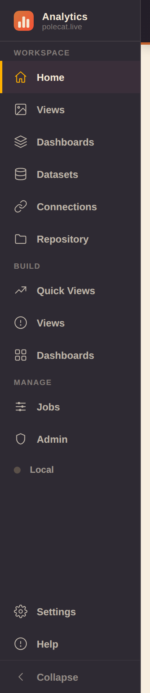
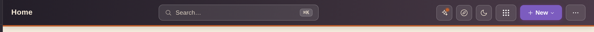
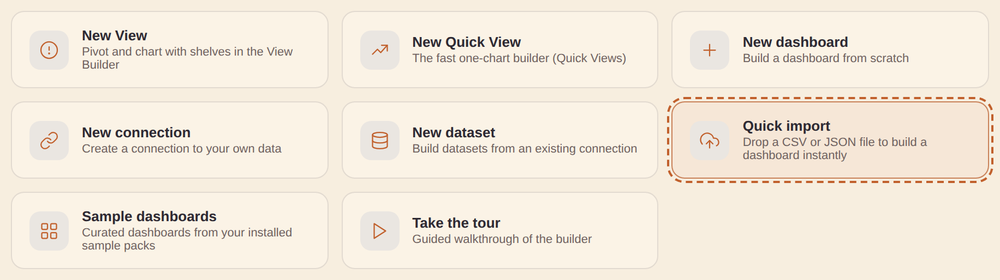
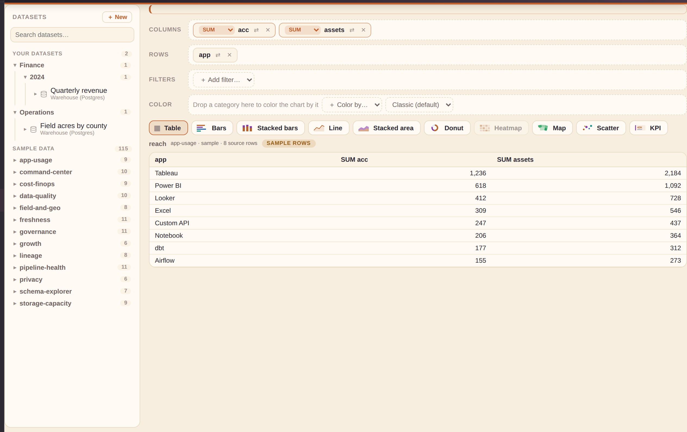
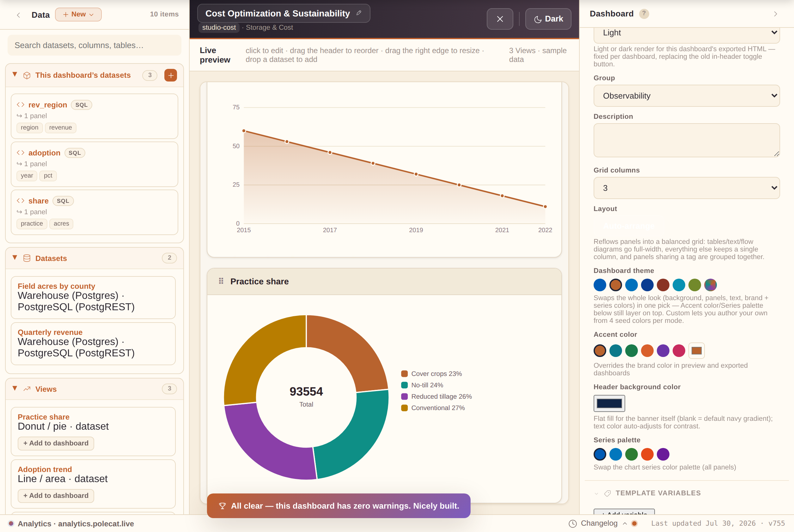
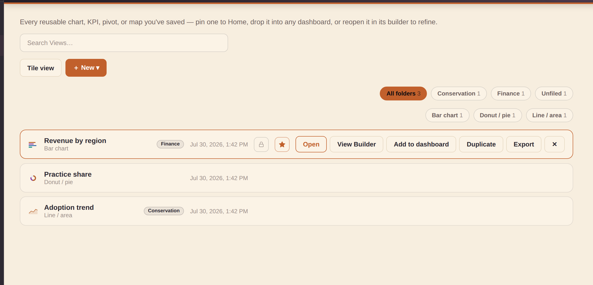
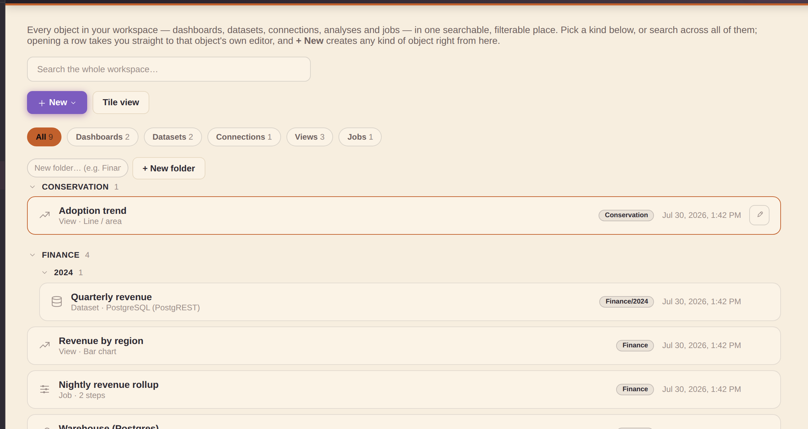
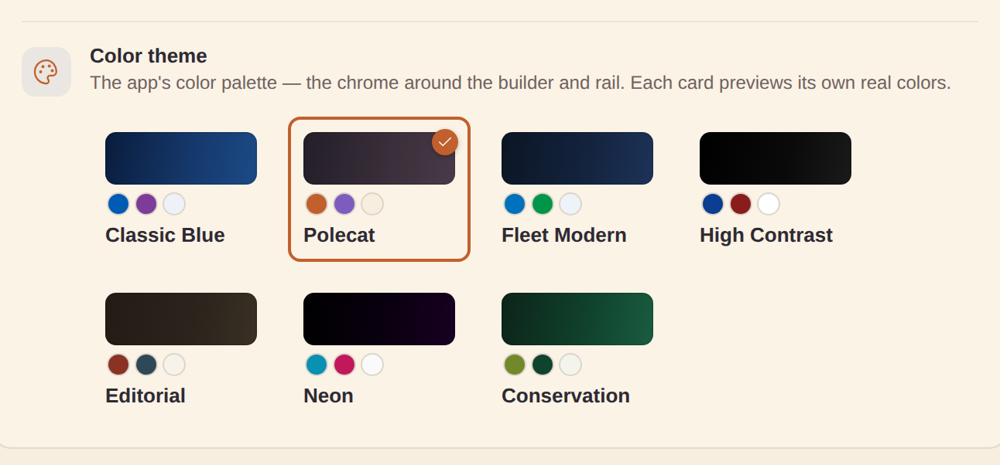

Getting started
Analytics lets you design complete analytics dashboards visually — no hand-coding required. Open a browser, choose a data source, drop it onto the canvas, and export a production-ready file in minutes.
Your first sign-in
A welcome screen greets you (by name, when you're signed in as a real user) and offers:
- Take a quick tour — a short step-by-step carousel. It's pack-aware: a workspace set up with a sample pack (say, Conservation Insight) gets an extra step introducing that pack by name — what it brings and where to find it.
- Take the guided tour — a spotlighted walkthrough of the real app. It's pack-aware too: the same "extra step naming your installed sample pack" trick, right after the intro.
- Three quick-action shortcuts — Explore data, Build a dashboard, Bring your data — to skip the tour entirely.
It shows only once; revisit it anytime from Settings → Tour or the ⋯ menu's Tour item.
The left rail — three groups

- Workspace — the things you have: Home, Views, Dashboards, Datasets, Connections, Repository.
- Build — the places you make them:
- Quick Views — the fast one-chart builder
- Views — the full View Builder (shelves, pivots, calculations)
- Dashboards — the dashboard builder (a.k.a. Studio, described below; visible to developer and admin accounts — a viewer opens dashboards through the read-only viewer route instead)
- Manage — Jobs, Admin (admin accounts only:
who can sign in, and whether they're an admin, developer, or viewer — each role a superset of
the one below), and the workspace-backend indicator:
- Local — your workspace lives only in this browser
- Connected — every change mirrors to your backend automatically
- Reconnecting… — a sync failed and the app is retrying on its own; click the indicator to jump to the backend card in Settings
Collapse the rail to icons-only with the toggle at its bottom. Your browser's Back/Forward buttons step through sections instead of leaving the app — Back closes an open editor, panel zoom, or slideshow first.
Two rail items worth calling out
- Home — quick-create cards, your recent and pinned dashboards, and a small rotating tip card (click its → arrow for another tip).
- Repository — every data source and dashboard in one searchable page. The search also matches a dashboard by its columns (the card shows which column hit), so a schema change is one search from every affected dashboard. A Group chip strip narrows the grid; hovering a card reveals ✎ edit / 🗑 delete — the same editors the Studio library uses, so the two views always agree.
The top bar

The top bar stays put across every section:
- Left — the name of the section you're in.
- Center — Search (⌘K / Ctrl-K anywhere): the command palette jumps to any command, dataset, or dashboard.
- Right — What's new (release feed, dotted when unread), What's next (near-term roadmap), the dark-mode toggle, the fleet app switcher, and New.
On phones the bar keeps the essentials — section name, search, app switcher, New — with the rest tucked into the rail drawer and the ⋯ menu.
Quick import — file to dashboard in one drop

Home's Quick import card is the fastest way in with your own data. Drop a
.csv or .json onto it (or click to browse) and the app:
- Profiles every column — recognizing map fields, dates, measures, and categories from names and values — and saves the file as a real dataset (a "Quick imports" file connection is created for you the first time; no setup).
- Auto-builds a real dashboard — a headline KPI plus whatever mix of bar, donut, line, and table Views the data supports, opened right in the builder. It gets as adventurous as your data allows: a map, treemap, slope chart, or ensemble view joins only when the data genuinely supports it (a map needs a real geo column; a slope chart a before/after measure pair; an ensemble a multi-provider series column). A time View only appears with a real date column, and category Views cap to their top values.
- Waits for you to Save — the quick-built dashboard shows "Unsaved — Save to keep" under its title, and opening or starting another dashboard warns before discarding it.
Files stay under 2 MB and inline (fully offline); for bigger files, host them and use the DuckDB (remote file) connector. The same affordance lives on the builder's empty canvas — an Import a file button, or drop the file straight onto the canvas.
New dashboard from Dashboards: a "+ New dashboard" button on the Dashboards page's own toolbar opens Studio on a fresh blank dashboard, next to the view toggle/Select/Compare — the same starting point as the topbar's "New ▾" menu or Repository's "＋ New ▾ → New dashboard", just reachable without leaving the page.
Export/Import repository: tucked behind the Dashboards page's More (⋯) menu — handy for moving work to another browser/device, or as a manual backup:
- "Export dashboards…" opens a picker to choose which dashboards to export (defaults to all — Select all / Clear to narrow). The download is one JSON file with the chosen dashboards, the data sources you authored that they use (the bundled catalog ships with the app, so it isn't duplicated), and the relevant pins + workbooks.
- "Import repository…" merges an exported file back in — additive, never deleting anything already here. A data source with the same id is overwritten by the imported version; dashboards merge by id, keeping the newer duplicate.
Workbooks
File dashboards into named collections on the Repository page:
- Type a name next to "+ Workbook" to create one; the chip strip above the Dashboards grid then filters to that workbook (or "Unfiled").
- Each dashboard card gets a Workbook dropdown to assign or move it.
- Hover a workbook chip for ✎ rename (Enter saves, Escape cancels) and ✕ delete — deleting a workbook never deletes the dashboards inside; they just become unfiled.
- Once one workbook exists, the same chip strip appears on Home above Pinned/Recent. If an installed sample pack contributed dashboards, a "Sample packs" chip joins the strip — Home's "Sample dashboards" card jumps here with it pre-selected.
Folders (alongside workbooks)
Dashboards also file into folders — the same nested "/"-path folders your datasets, connections, and jobs use (e.g. "Finance/2026"):
- Once one dashboard is filed, a "Folders" chip strip appears on the Dashboards page — it composes with the workbook chips, so you can narrow by both.
- List rows show a folder badge and a folder button opening the picker (browse, search, or create a nested folder); tile cards carry the same chip — it reads the folder name, or "Add to folder" when unfiled.
- Folders and workbooks are independent — a dashboard can live in both. Folders are the organize-at-scale navigation; workbooks stay a lighter cross-cutting grouping.
- Workbooks can go into folders too — hover a workbook chip and use its folder button to file the whole workbook.
Select multiple / bulk actions: click Select on the Dashboards page to enter multi-select mode — a checkbox appears on every tile/row, and tapping anywhere on a card or row toggles its selection instead of opening it. A bar above the list shows how many are selected with Select all / Clear, a Move to folder… button that files every selected dashboard in one go (the same folder browser the per-row folder button opens — pick a folder, create a nested one inline, or choose "No folder" to un-file them), and a Delete button that removes every selected dashboard after a confirmation (this can't be undone). Sample-pack dashboards can be selected and deleted individually like any other — removing one just drops it from your workspace; remove and re-add the sample pack in Settings to restore the full set. Click Select again (now labeled Cancel) to leave select mode.
Compare dashboards: the Repository page's "Compare dashboards…" button opens a picker for any two of your saved dashboards — a live preview of each renders side by side (the same render every export/preview uses, so it's a genuine "which of these looks better" comparison, not a thumbnail), with a plain-English summary of what differs between them underneath. This is distinct from a dashboard's own Version history (below), which only ever compares a dashboard against its own past checkpoint — Compare dashboards is for two different saved dashboards, e.g. judging two drafts against each other.
"Changes since you were last here": a recent-dashboard card on Home or Repository shows a small "N changes since you were last here" note whenever the dashboard has moved on since the last time you actually opened it — added a View, changed the accent color, whatever Version history's own plain-English diff would say. Hover the note for the actual list of changes. It clears the moment you reopen the dashboard (that becomes the new "last here"), so it only ever nudges you toward what's new since your last visit, not a running history.
.html, or a full bundle (.html + the editable .studio.json spec) — host it anywhere static pages live.Auto-build: click New ▾ → Auto-build to instantly scaffold a complete dashboard from any set of queries — KPIs from KPI data accesses + a chart per chartable DA, all in one click. Edit from there.
Install it: the Studio is an installable, offline-capable app — most browsers offer "Add to Home Screen"/"Install app" from the address bar. Once installed (or even just visited once), a background service worker caches the app shell so it keeps working with no connection; it always prefers a fresh copy over the network first, falling back to the cached one only when offline. "Clear local data" (⋯ More menu) also clears this cache.
Home — instant analytics
Home greets you with your content, live:
- Featured dashboards — click the small house button on any dashboard card to feature it. Featured dashboards render on Home as real, scaled-down live previews (the actual dashboard engine in a view-only frame, not a static thumbnail); one click opens them in the builder. The most-recently-featured one gets top billing as a full-width hero card.
- Pinned Views (★ in Quick Views) render the same way — live charts that open back into their builder.
- Favorite datasets & connections (the ★ toggle on their catalog rows) show as compact cards — click one to jump into its editor.
- Frames follow your light/dark theme and hydrate lazily, so offscreen cards cost nothing.
- Each Home section (Featured, Pinned, Favorites, Examples, Dashboards) has a ▲▼ control in its heading — reorder them to taste; the order sticks between visits.
- Examples shows sample dashboards from the packs you actually have installed (Settings → Sample packs) — removing a pack removes its cards. With more than one pack installed the cards group under a heading per pack, each with its own "+N more" into Dashboards; a single pack shows as one flat strip.
- Clear recents — the small button on the "Recent dashboards" heading empties that strip for you, on this device. Nothing is deleted: every dashboard stays in Dashboards and Repository, pinned cards stay put, and any dashboard you open or edit afterwards shows up in Recents again.
In Simple mode the app boots to Home whenever you have featured content, and to Quick Views when you don't; your own last-used section always wins.
Open in viewer (the eye icon)
Every dashboard card or row carries a small eye icon — it opens the dashboard read-only, full-page, in a new tab: the same live, interactive renderer (filters, cross-filter, provider toggles all work) with none of the builder chrome. Handy for sharing with someone who should read a dashboard, not edit it.
How dashboard filters find their data: a filter applies to a panel when the panel's dataset either declares the filter as a query parameter (live SQL engines substitute it server-side) or simply has a column with the same name — the rows are then filtered to the picked value. A filter named Since … keeps everything from the picked value onward (so "Since year 2020" shows 2020 to today, not just 2020). This works the same on live data, file datasets, and sample data.
- A private dashboard's viewer link only works for its owner (or an admin).
- A viewer-role account clicking any dashboard lands here directly — the builder isn't open to them at all.
- Save a copy (offered to everyone, viewers included) forks the dashboard into a brand-new one you own, without touching the original.
- A developer or admin also gets an Edit in Studio button that jumps straight into the builder on that exact dashboard.
The viewer's top bar also has an Export button (available to everyone) with the same formats Studio offers: Dashboard (.html) — a self-contained file you can drop on any static host or open offline — PDF (print), and the editable spec (.json). A sample or demo dashboard exports with its data baked in, so the download is complete on its own; a dashboard backed by a real data source keeps querying that source live, in the viewer and in the exported file alike.
Quick Views (Explore) — dataset-first analyses
Quick Views (left rail, Build group — the section previously named Explore) is the fastest path from data to chart, built for non-experts:
- Pick a dataset on the left — your workspace datasets first, sample data below.
- See its rows as a table, choose a chart, adjust the column mapping — the live preview is the real dashboard renderer, so what you see is exactly what a dashboard shows.
- Give it a name and Save View.
The dataset picker is a real navigator, not a flat list: datasets group into their folders (nested via "/"), sample data groups by set (collapsed once you have data of your own), and every branch collapses with a click. Searching flattens the tree to plain matching rows — finding something by name never depends on knowing where it's filed.
- Analyses are reusable. Saved analyses appear in the left list here, in the Studio library under Views (click + Add to dashboard or drag one onto the canvas), and — when pinned with the ★ — as cards on Home.
- Adding a result to a dashboard is unambiguous. The result panel's + New dashboard button drops your chart into a brand-new dashboard; Existing dashboard… opens a picker of your saved dashboards and adds it to whichever one you choose. Either way it's saved as an analysis first if you haven't already.
- Self-contained. An analysis embeds its data access, so it keeps working (with sample rows) even if the original workspace dataset is later deleted.
- Every scale of chart. The chart chips include the everyday types plus the US choropleth map (county / state / USDA district / watershed / congressional district / ZIP code) and the Ensemble common-estimate chart with its reference-series option. A map's Renderer picker (Built-in vs Interactive GL — pan & zoom at any polygon count) is right there too, and the choice is saved with the analysis. On the Interactive GL renderer, a Zoom/pan controls option shrinks the on-map cluster to a compact size or hides it entirely (Show / Compact / Hidden) — handy when the controls compete with a dense dashboard layout; dragging and scroll-to-zoom keep working even when the cluster is hidden. A Controls position option docks that same cluster in any corner of the map (top right by default, matching every map saved before this option existed).
- Workspace datasets run live for the table preview and the chart; if a live run fails, Explore falls back to typed sample rows and says so.
- Rollups (group-by aggregation). Under the column mapping, the Rollup control lets you aggregate the value column with Sum, Mean, Median, Min, Max or Count, grouped by one or two dimensions (Group by / Then by) — so a detail dataset becomes a chart of totals or averages without building a Job first. The rollup is saved onto the analysis, so it re-aggregates the same way on Home, in any dashboard, and in the exported HTML. (Geo and Ensemble charts carry their own aggregation, so the control is hidden for those.)
- In Simple mode, Explore is the default section on first open.
- New dataset without leaving Explore. The + New button next to the dataset search opens the same dataset editor the Datasets section uses — save it and Explore selects it immediately, ready to chart.
View Builder — pivot and crosstab, no code

Views (left rail, Build group) is Quick Views' power-user sibling: a visual pivot/crosstab query builder.
The dataset navigator (left panel)
- Workspace datasets group into their folders (nested via "/", each branch collapsible, sorted alphabetically); sample data groups by set and collapses once you have datasets of your own.
- Search flattens the tree to plain matching rows; every row shows an icon and the dataset's name over its connection (full name in the hover tooltip).
- Hover a workspace dataset for ✎ edit / ⧉ copy / ✕ delete, and ＋ New opens the same dataset editor the Datasets section uses — your new dataset is selected the moment you save it.
Fields and shelves
Click a dataset and its columns appear as chips — # marks a numeric
field, a a text one. Click a chip (or drag it) onto the Columns
shelf and the result table renders live in the middle. Numeric fields aggregate automatically as
SUM — the little aggregation badge on the shelf chip switches to AVG, MIN, MAX,
MEDIAN, or COUNT. With only dimension fields on the Columns shelf you get a plain selection of
those columns; add a measure and the dimensions group it. Some numbers aren't quantities — a
FIPS code, a year, an ID — so the aggregation dropdown also offers CATEGORY,
which groups by that field instead of summing it; id-like numeric columns (ending in
_fips, _id, or plain id) default to Category the first
time you drop them, rather than SUM.
When you save, the Panel title field names the panel that holds the View on dashboards — it defaults to (and keeps tracking) the View's name until you set your own.
Drop a field on the Rows shelf (or use a chip's ⇄ button) and the table pivots into a crosstab:
- Rows fields run down the side; the first non-aggregated Columns field spreads across the top; measures fill the cells.
- A Total column aggregates each row (COUNT of rows when no measure is picked).
- Workspace datasets run live through their connection where possible; otherwise the result carries the same sample rows badge used everywhere else, so shape-preview data can never be mistaken for yours.
- Shelf pills are draggable: drag one onto another shelf to move it (converting automatically — a measure dropped on Rows loses its aggregation, a field dropped on Filters becomes a filter), or onto a sibling pill to reorder within a shelf.
The chart strip above the result switches how it draws: Table (the full pivot), Bars, Stacked bars, Line, Stacked area, Donut, Heatmap, Map, Scatter, or KPI. Charts draw your computed numbers through the real dashboard renderer — Bars and Donut chart the first dimension against the first measure (COUNT of rows when no measure is picked), and Heatmap lights up when you have a field on Rows plus a plain field on Columns, drawing exactly the crosstab as a color matrix. A chart that needs something you haven't added yet is simply disabled, with the reason in its tooltip.
The chart canvas fills to the bottom of the screen by default (like the dataset panel next to it) and is resizable: drag the slim bar under it to make it taller or shorter, or the bar on its right edge to make it narrower or wider. The size you set sticks across visits; double-click a bar to snap that direction back to automatic (fill to the bottom / full width). On a phone the canvas just fills the width — no drag bars.
The Datasets panel resizes the same way: drag its right edge anywhere from 200 to 480px when long dataset names get cut off — the width sticks across visits. The chevron in its header collapses the whole panel to a slim vertical strip (more room for the canvas); click the strip to bring it back.
Drop a file to start instantly. Drag a CSV, TSV, or JSON file anywhere onto the View Builder: it becomes a real dataset (it appears in your Datasets list like any other) and the builder inspects the columns and opens the most interesting view on the canvas — a map for geographic ids, a trend line for time data (color-split when a small category column exists), bars for categories, or the raw table when nothing pairs up. The shelves arrive pre-filled, so keep editing from there or hit Save View.
Switching datasets never loses your work. Each dataset keeps its own work-in-progress draft: click another dataset and your shelves, filters, calculations, and chart pick are stashed; click back and they return exactly as you left them (drafts survive a reload too). Datasets carrying a draft show a small dot in the panel, so you can build on several and walk through them one by one. The Clear canvas button at the right end of the chart strip resets just the current dataset to a clean slate.
KPI is the odd one out: no dimension at all, just one rolled-up headline number (Save adds it to a dashboard's KPI row, not its panel grid). Put any field on a shelf — a measure aggregates across every row, or a plain field falls back to COUNT — and it collapses the whole filtered result down to a single value, the same grand-total rollup the Table chart type would show with nothing on Rows and one measure on Columns.
Scatter needs two measures instead of one: put a dimension on Rows or Columns plus two or more numeric measures on Columns, and it plots one point per dimension value — the first measure on the x-axis, the second on the y-axis. It's the same one-dimension basis Bars and Donut use, just widened to carry two measures instead of one, so it's disabled until a second measure lands on the shelf.
Map draws a US choropleth from your geographic field (region ids —
FIPS county code, state FIPS or postal code, USDA district, watershed/HUC8, congressional
district, or ZIP) against the first measure — the geo-looking field wins the map's id role from
either shelf, so a year sitting first doesn't steal it. The Region scale picks
itself from that field's name and values (a state_fips column opens as States, a
huc8 column as Watersheds) — the Auto entry in the Region-scale
control next to the chart types shows what it inferred, and picking a scale there overrides it.
Renderer and styling still live on the saved View's panel like any other map. Put a field on the
Color shelf and the map switches to per-region series instead: a
long table of region × series × value that plugs straight into the Studio ensemble channel, so an
Ensemble chart's provider toggles elsewhere on the same dashboard re-color it live.
Line, Stacked bars, and Stacked area all draw multiple series when the shelves support it: pivot a field on Rows against a plain field on Columns (a crosstab) with one of the three picked, and every Columns value draws its own line / bar segment / band against the Rows field. Or skip Rows and put two or more measures on Columns — each measure draws as its own series, grouped by your one dimension. Anything richer (two Rows fields, or a crosstab with more than one measure) still falls back to a single series on the first dimension and measure — the same one-dimension basis Bars and Donut use.
The Filters shelf narrows the source rows before anything computes — the pivot, every chart, and the row count in the status line all see the same filtered set. Add a filter by dragging a field there or with the ＋ Add filter picker: a text field filters by a searchable value checklist (All/None + pick what you want), a numeric field by a min–max range (leave a bound blank for open-ended). A freshly added filter shows all and changes nothing until you edit it; active filters highlight their chip and the status line reads "N of M source rows (filtered)".
The Color shelf makes color a first-class encoding, not just a chart-type default: drop a category there (or pick one from ＋ Color by…) and Bars gets a distinct color per bar instead of one flat color — the same per-category coloring Donut already draws by default. With nothing on the Columns shelf, dropping a field on Color also splits a Line chart into one line per category, standing in for a Columns split field. Alongside it, a palette picker swaps the chart's color family — the same presets the main Dashboards builder's "Series palette" control uses — so a View can preview in a different color scheme without leaving Build.
Calculated columns: the ＋ calc… chip at the end of the
selected dataset's column list opens an editor where you define new columns from formulas —
=[revenue] / [acres], =([a]+[b])*100, or the running helpers
=pctChange([sales]) and =movingAvg([sales], 3). It's the same safe
formula language the Studio data-source editor uses. A calculated column appears in the outline
with an = marker and from there behaves like any other field — put it on a shelf
(numerics default to SUM), filter by it, chart it. A calculated column can't shadow a real
column's name, and deleting one cleanly removes it from any shelf or filter that used it.
Save View (top right) saves the result as a View with whichever chart type is selected — filters and calculated columns included — and it appears in the Views section like any other. Opening it from there returns it to Build with its dataset, shelves, filters, calcs, and chart restored (Views made in Explore keep opening in Explore). The Save dialog offers a ✨ name-suggest button and a Folder field — type a new folder, pick one from the list of folders already in use, or click Browse to navigate the existing folder tree, the same picker every other Folder field in the app uses.
A saved View Builder View shows its real computed result everywhere it's used: dropped on a dashboard, pinned to Home, or opened in Quick Views, the app re-runs the View's dataset, filters, and calculations and renders the actual numbers — not placeholder sample rows.
Sample packs
Sample packs (Settings, and the Studio library's left View) are ready-made demo content you can install or remove. A pack can add dashboards, datasets, connections and jobs — all with synthetic (made-up) sample data, never your real data — and Remove takes back exactly what Install added. Everything a pack adds is filed in the pack's own folder (Conservation Insight, Data Management) across every section, and its raw sample tables only appear in the dataset pickers while the pack is installed — an uninstalled pack leaves no trace. Like the built-in catalog, sample packs live under the same Sample content switch in Settings — turn that off and both disappear from the library, with nothing deleted.
- Conservation Insight is an illustrative sample for a county-level cover-crop and conservation-tillage ensemble use case: a raw provider CSV to try a mapping workflow on, four pinned per-practice Views built in the View Builder (open one from the Views list and it lands on the shelves — adoption by year, split by provider, filtered to its practice), a featured multi-View dashboard pairing the practices with a county choropleth, and a dedicated Watershed Map dashboard (a full-width HUC8 choropleth) — all live on Home the moment you install it. All of its data is synthetic and labeled as illustrative. The featured dashboard also demonstrates two different filtering styles: a plain filter bar (Practice, Since year) that narrows individual Views, and a linked cross-filter — click a provider on any adoption-trend chart's legend and every choropleth on the dashboard re-colors together. Installing it also adds eight extra showcase dashboards (a practice-adoption scorecard, a crop/practice flow view, a watershed-scale adoption view, a program cost-share ROI view, a provider-agreement-over-time view, a county-level outlier-detection view, a year-over-year practice-switching view, and a richtext-led narrative overview rolling all of it up, each with their own filter bar too, save the overview) to both your Dashboards screen and Home's sample gallery — removing the pack takes all nine dashboards back out again, so the workspace doesn't get cluttered for everyone else.
- Data Management & Governance is the built-in generic showcase gallery (Data Governance, Data Platform Operations, Product Delivery, Finance, Marketing, Incident Response, Compliance, Data Quality, Pipeline Observability, Storage Footprint, Cost & Sustainability, and the Interactive Feature Tour) folded into a toggleable pack, installed by default so the gallery looks exactly as it always has. Unlike Conservation Insight, this pack adds no connections, datasets, or jobs — Install/Remove shows or hides those twelve gallery entries and adds or removes them from your Dashboards screen, so turning it off just declutters both for a pitch that wants to stay focused on Conservation Insight alone.
Jobs — prep & rollup
Jobs (left rail) prep one dataset before it's charted: rename or cast a column, derive a new one from arithmetic on two others, filter rows, roll everything up with a group-by aggregate, and join or union in a second dataset. Run a job and the result is saved back as an ordinary dataset — ready for Explore, the Studio library, or any dashboard — and re-running the same job updates that dataset in place, so an annual data refresh is a single click.
- Steps run in order and can be reordered or removed; Preview runs the source dataset live and shows the pipeline's output before you save.
- A source field list sits above the steps, showing every column on the source dataset with a best-effort type icon and color (Numeric/Date/String, guessed from the column name) — see what's available before you start picking columns.
- Sample rows and an output preview sit below the field list: a small live sample of the source dataset's real rows, and an approximate preview of what the output looks like after the current steps run — both update instantly as you edit steps, no Preview click needed. Join/union steps only know the linked dataset's column names here, so their preview rows are honestly approximate; click Preview for the authoritative result. Editing any step afterwards clears that real Preview result (it's now out of date), so you only ever see one preview at a time — hit Preview again for a fresh authoritative run.
- Column fields are dropdowns — group-by, rollup-metric, join/union key, and the Filter / Rename / Cast column fields are all picked from each step's real, known incoming columns rather than typed by hand, so a mistyped or wrong-case column name can't slip through. A dataset that hasn't been queried yet is probed live in the background the moment you open the job editor, and the dropdowns fill in as soon as its columns are known; a column you'd already set stays selectable even if the list has since changed.
- Filter values suggest themselves — once a Filter step's column is picked, its field's known sample values (drawn from the same live source-row sample as the previews above) appear as a dropdown of suggestions in the value box; you can still type any value by hand (needed for gt/lt-style comparisons), the suggestions are just a shortcut when the column has a small, known set of real values.
- A small diagram under each rollup, join, or stack (union) step shows the operation visually — columns going in, the operation in the middle (group-by columns for a rollup, the join key/type for a join, the other dataset for a stack), and the columns that come out — so the shape of what you're building is visible at a glance, not just the raw fields.
- Multiple rollup levels — add a second (or third) aggregate step to roll up an already-aggregated result again (e.g. sum acres by county+year, then average that across years for a county-only figure); each aggregate step's group-by/metric dropdowns show the columns as they exist at that point in the pipeline (the previous step's output), not the original source dataset's columns.
- Rollup metrics include sum, average, count, median, and a weighted mean — the honest way to aggregate a percent metric from county up to State, USDA Crop Reporting District, or HUC8 watershed: a flat average of percentages misrepresents counties of very different size, so pick an acreage (or similar) column as the weight.
- Join adds a second dataset's columns onto matching rows by a key column (inner drops unmatched rows, left keeps them with blanks); added columns that collide with an existing name get an auto suffix, or set a prefix yourself.
- Union stacks a second dataset's rows onto the pipeline's existing schema — the normalize-and-stack case for combining several differently-shaped sources (e.g. five providers with five different raw column names) into one common table. Each output column maps from a column in the other dataset (or falls back to a same-name match, else blank).
- Add unique row ID stamps a stable, unique id onto every row currently in the pipeline — place it after a join, union, or aggregate step to key the rows at their final grain (an aggregate collapses many source rows into fewer output rows, so an id added before it wouldn't match the shape you actually save).
- Custom SQL runs an arbitrary query against the pipeline's rows so far
(table
t), via an in-browser DuckDB engine loaded the first time a job uses it — useful for anything the built-in steps don't cover directly. - Refresh reminder (weekly/monthly/quarterly/yearly, optional) flags a job ⏰ Refresh due on the Jobs list once it's overdue against its last run — a hint, not real scheduling (there's no server to run a cron; the app is static and client-side), so it only shows up next time the list is open. Handy for the annual-refresh case: set it once and the list tells you when it's time to click Run again.
The builder
The workspace is divided into three resizable panes. Each pane can be collapsed to a labeled rail by clicking the ‹ / › collapse button.
Polecat apps switcher: the app bar (top of the screen, next to ＋ New) carries a waffle (3×3 grid) button that opens the Polecat suite switcher — one-click jumps to the other apps in the family (Chat, JobTracker, AutoSelector, Relay, Games, Manager, and this one, highlighted as the current app). It's the same switcher every polecat.live app carries, themed to whichever Studio look you're using.
What's new: the Changelog button in the footer opens the full release feed in a right-hand panel — every version, newest first, with live search (matches highlighted) and Central-time stamps. A small dot on the button means there are releases you haven't seen yet; opening the panel clears it. Close with the ✕, Escape, or a click on the backdrop.
Three panes
- Query Library (left) — All data accesses organized by group. Search by name, table, or column keyword. Drag any card onto the canvas to create a View. In Advanced mode, use ＋ New source to author your own query.
- Live preview (center) — The real dashboard rendered in an iframe. This is byte-identical to what the export produces — no approximation. Click a View to select it; drag the title bar to reorder; drag the right edge to make it wider, or the bottom edge to make it taller — as tall as the whole screen if you like. The height sticks and carries into the viewer and every export.
- Inspector (right) — Contextual editor for whatever is selected. When nothing is selected, shows the dashboard-level controls. Click a View → View inspector. Click a KPI tile → KPI inspector. Click a filter → filter inspector. Click the title banner itself → Header inspector.
The builder opens clean: both side panels start closed so the dashboard gets the full width — pop them open with the edge chevrons when you need them. Prefer them always open? Flip Open the builder with side panels in Settings and every visit starts that way.
The View inspector is context-aware: interaction sections like Drill-through, Detail drawer, Cross-filter, Conditional formatting, and Color scale only appear when the selected chart type actually supports them (e.g. Conditional formatting shows for Bar/Donut/Treemap/Lollipop but not for Table or Line — clicking a table row instead opens the Detail drawer). This keeps the inspector focused on settings that do something for the current chart.
Renaming a dashboard: the dashboard title in the toolbar above the live preview renames in place — click it and it becomes a text field (Enter or clicking away commits, Escape cancels). The Dashboard inspector's Title field is the same value, edit whichever is closer. The Title (the display name shown in the dashboard's header/banner) and the File name (stem) (the lowercase-with-dashes name used for exported files, e.g. my-dashboard.html) are two independent fields right below it, so you can rename either without the other changing.
Header logo: the Dashboard inspector's Header logo field (below Subtitle) uploads a PNG/JPG/SVG (up to 200KB) that replaces the default "P" mark in the dashboard's banner, in both the live preview and the exported Dashboard Framework — a per-dashboard brand mark, separate from the app-wide rail branding in Admin. Leave it blank to keep the default mark.
Header link: the Header link URL field right below it makes the logo + title in the banner clickable, opening that URL in a new tab — handy for linking back to a company site or portal. Leave it blank to keep the banner as plain, non-clickable text.
Show dashboard header (embed mode): the Header toggle in the Dashboard inspector. Turn it off and the entire title banner and description bar disappear from both the live preview and the exported .html, leaving just the KPIs and Views — a clean, chrome-free dashboard you can drop straight inside your own page. Turn it back on and the title, subtitle and description return, all still editable in the inspector.
The header as an object: click anywhere on the title banner in the live preview (not on one of its buttons) to select it, the same way clicking a View or KPI tile does — the Inspector switches to a dedicated Header view with quick Title/Subtitle/Alignment fields and a ✕ button that hides the whole banner (the same effect as the Show dashboard header toggle above). Double-clicking the title or subtitle text directly still edits it in place without needing to select first. Logo, link, and light/dark stay on the Dashboard panel (click "‹ Dashboard" at the top of the Inspector to get back there).
Alignment: in that same Header view, the Alignment picker (Left / Center / Right) moves the brand mark, title and subtitle within the banner. Left is the standard flush-left layout. Center and Right shift that block toward the middle or the icon cluster on the right — the info/print/waffle icons always stay pinned to the far right either way.
Title size: right below Subtitle, the Title size picker (Default / Small / Large / Extra large) resizes just the banner title text — handy for a dense multi-KPI ops board (Small) or a single-hero exec dashboard where the title should dominate the banner (Extra large). Leave it at Default to keep the standard weight/size.
Subtitle style: next to Title size, the Subtitle style picker (Normal / Italic / Bold / Bold italic) adds emphasis to just the banner subtitle — e.g. Italic for a light tagline, Bold for a subtitle that should read almost as loudly as the title.
Card style: below Subtitle style, the Card style picker chooses the render mood for every chart card and KPI tile on the dashboard. Raised (default) keeps the standard shadow, glass-edge highlight, and hover lift. Flat / minimal strips all three for a quieter, editorial look — same data and layout, just a calmer surface treatment for a boardroom setting. Sketch / hand-drawn swaps the shadow for a dashed border and a wobbled, asymmetric radius for a whimsical, hand-drawn mood.
Share this dashboard
Copy shareable link (in the Dashboard inspector) encodes the whole working
dashboard — Views, KPIs, filters, style — into a #share=… link, no file, no server.
Opening it in any browser reopens the exact dashboard in the builder — handy for handing a
work-in-progress to a teammate.
- Share just my changes appears once you've sent a full link and keep editing — a much shorter link carrying only what changed since. The recipient must already have the dashboard from a previous link; without that base it shows a clear error.
- Different from the Shareable link section above it (shown when the
dashboard has filters): that copies a short
#filterId=valuehash meant for an exported file, not the builder.
Version history
Every Save (topbar button or Ctrl/⌘+S) keeps a timestamped checkpoint of the whole dashboard — up to the last 10 per dashboard, stored locally on this device:
- Restore any entry (after a confirm) — the restore itself becomes a new checkpoint, so restores can always be undone too.
- ⇄ Compare to current opens a plain-English change list (title/style fields, and which Views/KPIs/filters were added, removed, or changed) so you can see what a restore would actually undo first.
- Separate from in-session Undo/Redo (lost on reload) and the single unsaved-draft autosave — this is a real time-travel timeline.
Dashboard theme

At the top of the style section, the Dashboard theme picker swaps the whole look — background, View, text, brand, and all ten chart series colors — in one click, for the preview and the exported dashboard alike. Every curated theme's series palette is validated for contrast (WCAG AA) and colorblind safety in both light and dark mode:
- Polecat — the warm terracotta/plum house look; the default for new dashboards.
- Classic Blue — the original look, unchanged.
- Fleet Modern — a cooler dark/light system aligned with the rest of the Polecat fleet.
- High Contrast — true black/white extremes with solid borders, for maximum legibility.
- Editorial — paper-and-ink boardroom mood; a quieter "print report" feel.
- Neon — synthwave: near-black Views with electric cyan/magenta accents; the header stays near-black in both modes for a consistent "neon on black" identity.
- Custom — author your own. Pick Background, View, Text, and Brand for light and dark (8 fields); everything else (borders, subtle fills, sidebar, grid lines) is derived automatically, with a live warning if a text/background pair falls below the 4.5:1 AA contrast minimum.
Good to know:
- A custom theme travels with the dashboard — Save, Export, and Share all carry it.
- Theme presets (below the color editor) save the current custom theme under a name to reuse across dashboards.
- Accent color, Header background color, and Series palette still layer their own overrides on top of whichever theme is active.
Header background color: further down, below Accent color, the Header background color picker sets a flat fill for the banner itself (the default is a navy gradient) — text color auto-adjusts for contrast (dark text on a light pick, white on a dark one), so it's always readable. This is separate from Accent color, which only tints the bottom border plus chart/button accents throughout the dashboard. Click "Reset to default" to go back to the standard navy banner.
Edit JSON spec (power users)
The Edit JSON spec… command palette entry (⌘K / Ctrl K) opens the whole working dashboard as raw, editable JSON — Views, KPIs, filters, style, everything. Useful for bulk edits, scripting a change outside the app, or seeing exactly what the builder tracks.
- Apply validates the JSON is well-formed and spec-shaped (a
widgetsarray and acda.dataAccessesarray) before applying — an invalid edit shows an inline error and changes nothing. - A checkpoint is saved to Version history right before your edit lands, so any hand-edit is one restore from undone.
Build progress & Checks
The top of the dashboard inspector shows a small ring + checklist tracking five well-rounded-dashboard milestones — a real title, a View, a KPI, a filter, and a touch of your own style. It's purely encouraging (an empty dashboard is perfectly valid) and collapses to a one-line "nice work" note once every milestone is met.
The Checks section right below it is different — it only flags real problems:
- Missing data bindings, an invalid file-name stem, and similar genuine issues.
- A data access declared but not used by any View or KPI — leftover config from an earlier draft doesn't go unnoticed.
- Collapsed, its header still shows a glanceable summary — "all clear," or "1 error, 2 warnings".
- The first time a dashboard reaches zero Checks issues, a small one-time celebration plays — the same delight moment a first export gets. (All six direct-query connectors have a real live-query runtime after export, so none of them trigger a Checks warning.)
Drag and drop
- Drag a DA card from the library → drop on the canvas to add a chart View.
- Drag a View's header grip → drop between any other Views to reorder (across rows).
- Drag the right edge of a View → resize its column span (1–4 columns).
- Double-click a View title on the canvas to rename it inline.
Auto-arrange: the Layout field in the Dashboard inspector (next to Grid columns) has an Auto-arrange button that reflows the existing Views for you — chart types with a lot of horizontal detail (Table, Text/annotation, Sankey, Chord, Calendar heatmap) get a full-width row of their own, everything else defaults to a single column, and Views sharing a tag are grouped together. A quick starting point for a first draft; drag-resize still works normally afterward.
Undo / Redo
Every structural edit (add, remove, reorder, resize, rename) is snapshotted. Use Ctrl Z / ⌘ Z to undo and Shift Z to redo. The ↶/↷ buttons in the topbar work too (they only show while Studio is open). Text-field edits are not tracked individually (to avoid flooding the history).
Sample dashboards
The bundled sample dashboards — a curated, most-spectacular-first gallery spanning operations, engineering delivery, finance, marketing & growth, reliability, governance, compliance, quality, pipelines, storage, and cost, together covering all 52 chart types at least once (the newest — the Metrics wheel — in the Conservation pack’s own System Metrics dashboard) — live in two places: Home's sample gallery (click a tile to open it in the builder) and the Dashboards section under the Sample packs chip. A great way to explore what's possible before building your own. (The old Studio "Examples ▾" toolbar menu is gone — same dashboards, better homes.)
＋ Import from URL… (in the Open-dashboard picker's footer) loads a dashboard
from any public link to a .studio.json file — a GitHub raw link, a gist, a static
host. A plain client-side fetch, no backend, no account:
- Publish a
.studio.jsonanywhere public, share the link, anyone can import it — a simple community template exchange. - The URL can also point to an index of templates — a JSON array (or
{"templates":[...]}) of{title, url, description}entries — and the modal shows a browsable list to pick from. Good for publishing a whole template pack from one link.
Slideshow & story mode
⋯ More → Present → Slideshow cycles through every View one at a time, full-screen — great for a stakeholder walkthrough:
- Navigate with ◀/▶ or the arrow keys; Escape or × exits.
- Each slide renders through the exact export pipeline — quality identical to what you'd ship.
- Its neighbor Focus mode collapses the builder panes so the live preview fills the screen — no cycling, just a distraction-free canvas; exit the same way.
Slide caption (View inspector, below Note) adds narration that appears only in Slideshow — one beat of the story per slide (e.g. "Revenue held steady, but churn ticked up in March"). Distinct from Note, which is stakeholder context shown everywhere; Views without a caption simply show no caption bar.
Turn on Slide emphasis (right below Slide caption) to have that View's slide play a brief zoom + glow entrance the moment it appears — a light touch of choreography that draws the eye to the beat that matters most, replaying each time you return to that slide. Once it's on, Pan X / Pan Y sliders appear too — drag them off-center to anchor the zoom toward a specific spot in the chart (a spike near the edge, say) instead of dead center.
Dashboard filters
The Filters section of the Dashboard inspector (◈ +) adds a dropdown filter chip above the Views. Click + to add one, then click the chip in the live preview (or its row in the list) to open the Filter inspector:
- Label — the chip's on-screen name.
- Parameter id — the
{{param}}key any dataset/query references to react to the current pick. - Options query — which data access supplies the dropdown's choices, with Value column / Text column picking what's stored vs. displayed.
- 'All' label and Default value — the always-present "everything" choice.
- An Options preview shows the live choice list right in the inspector.
Cascading filters: if a filter's Options query is itself a parameterized data access (it takes its own ${param}), its choices refresh automatically from whichever upstream filter supplies that parameter — e.g. a Region filter narrows a State filter's options to just that region's states. The Filter inspector notes when a filter is wired this way.
Template variables
Write {{key}} anywhere in the dashboard's Title/Subtitle
or a View's Title/Note, then define matching entries in the
Dashboard inspector's Template variables section — each substitutes its saved
value in the live preview and every export.
- A
{{key}}with no matching variable stays literal text — a typo is obvious, never silently blank. - Turn one spec into a reusable template:
{{region}} — Weekly Ops Reviewfilled in per deployment instead of hand-editing. - Save current as… names the current variable set; Apply reuses it on any dashboard built from the same template.
Built-in dynamic tokens
These need no variable — write them into a dataset's SQL/query (or a title) and they resolve fresh on every run, so relative-date filters stay current on their own:
- Days —
{{today}},{{yesterday}},{{tomorrow}}, and any offset like{{today-30}}/{{today+7}}. - Periods —
{{week_start}}/{{week_end}}(Monday-start),{{month_start}}/{{month_end}},{{quarter_start}}/{{quarter_end}}(calendar Q1–Q4),{{year_start}}/{{year_end}}. - All render as ISO dates (
YYYY-MM-DD);{{now}}renders a full ISO timestamp for datetime comparisons.
So WHERE order_date >= '{{today-30}}' is always "the last 30 days." The
Date token button on the dataset builder's query field drops any of these at
your cursor; defining a real parameter or variable of the same name overrides a built-in.
Ensembles & scientific honesty
When several sources estimate the same thing — several vendors' models, several surveys, several labs — the Ensemble chart and the Map (US choropleth) chart are built around one rule: the common estimate is the product, not a leaderboard. The sections below explain the design choices behind that rule and how to read (or build) an honest ensemble dashboard.
The median is bold; providers are supporting evidence
On both charts, the combined value — the median of whichever sources are currently toggled on — always renders as the boldest, most prominent element: a thick line on Ensemble, the fill color on the map. Individual providers draw thin and muted (hollow dots, low opacity) — present so you can inspect the underlying evidence, but never competing visually with the estimate itself. Toggling a provider off (click its chip under an Ensemble chart) removes it from the median calculation everywhere it's used, including any map sharing the same ensemble channel (the map's Provider/series column option) — both charts recompute and re-render live from the same reduced set.
The agreement band is a confidence signal, not decoration
The translucent band around the Ensemble chart's median line spans the full range of the toggled-on providers at each point. Read it literally: a tight band means the sources agree (high confidence in the estimate there), and a wide band means they don't (treat that point with more caution). It is not a stylistic flourish — it's the chart's way of showing uncertainty honestly instead of hiding it behind a single confident-looking line.
A reference series is context, never the estimate
Both charts support an optional reference series (e.g. an independent census or ground-truth figure) drawn as hollow markers, visually distinct from the provider lines and the median. A reference series is deliberately excluded from the median calculation — it's there to let a viewer compare the ensemble's estimate against an outside benchmark, not to be folded into the estimate itself.
No-data is shown, never guessed
The choropleth renders regions with no data as a hatched "No data" texture rather than leaving them blank (easy to misread as zero) or interpolating a value (which would misrepresent coverage). Combined with the provenance popover below, a viewer always knows exactly how much of the map is real data versus gaps.
Checking the honesty story: the ⓘ Sources popover
Both charts have an ⓘ Sources button next to their legend — a popover answering "how much of this can I trust?":
- On the map — what fraction of regions actually carry data (and, with a provider column mapped, each provider's own region count).
- On the Ensemble chart — how many providers are selected, how many points have every selected provider reporting (full coverage — stricter and more honest than the agreement band alone), each provider's point count, and the reference series' count with a reminder that it never joins the estimate.
- Last updated — when the data comes from a saved workspace dataset, the dataset's own timestamp (bumped automatically by a re-run prep job), so a chart is honest about its freshness, not just its providers.
The popover stays open while you read it (unlike a hover tooltip) and works identically in an exported dashboard.
Handing off the underlying numbers
Both charts' Download data button (the same on-canvas control every View has — see "Downloading a View's image or data" below) exports exactly the selection currently shown — the map's region id/value pairs post-aggregation, or the Ensemble chart's long-format label/provider/value rows for the toggled-on providers plus the computed median and any reference series — instead of the raw bound query. Re-download after toggling a provider and the file reflects the new selection — a quick way to hand a stakeholder the same numbers the chart is drawing from.
Worked example: install the Conservation Insight sample pack (Settings, or the Studio library's Sample packs group) for a complete, ready-made illustration of everything on this page — four pinned Ensemble analyses (one per conservation practice) and a featured dashboard pairing them with a provider-aware county choropleth, all built from synthetic, clearly-labeled sample data.
Chart types
Maps
52 chart types are available, grouped by purpose. Select the chart type in the View inspector after clicking a View on the canvas.
Not sure where to start? Once a View has a query bound, a "Recommended for this data" strip appears above the full gallery with 1–3 suggested types (e.g. Line for a date column + a number, Donut for a low-cardinality category) — each button explains its "why" on hover and switches the chart type on click.
Once you're in a chart type's own options (below the gallery), common toggles like Sort by value, Show legend, Smooth curve, Show data points, Show value/label, Show %, and Rotate labels carry a small glyph next to their label — hover it (or Tab to it) for a one-line explanation of what the toggle actually changes. Sort by value, Smooth curve, Show legend, Show data points, Show value/label, and Rotate labels go a step further with a genuine Off → On picture — two tiny side-by-side diagrams showing exactly what the toggle redraws, not just a sentence about it.
Comparison
Composition
Trend
Flow
Single value
Distribution
Comparison
Detail
Simple mode shows only the 13 most universally understood chart types. Switch to Advanced mode (⋯ More → Simple mode off) to unlock all 52 types plus specialist annotation tools.
Data sources & data accesses
Every chart View is bound to a data access (DA) — a named query. The Data panel (left pane) lists everything you can build from: this dashboard's own datasets, the workspace's shared Datasets, saved Views, and Sample packs. In Advanced mode you can also author your own queries — they appear in a My queries group at the bottom of the panel. (The old "Samples" group of built-in demo queries is gone: sample content comes only via Sample packs now, so there's one source of truth.)
The library's This dashboard's datasets and Sample packs groups collapse by default once one gets long, so the panel leads with an overview instead of a wall of cards — click a group's header to expand or collapse it any time, and your choice is remembered from then on. Each group also carries its own small glyph next to its name (a cube for this dashboard's own datasets, a database for the shared workspace catalog, a trend line for saved Analyses, stacked layers for Sample packs, and a code bracket for your own authored queries), so the panel is scannable by "what kind of thing is this" at a glance.
Using catalog queries
- Drag any DA card onto the canvas to create a chart View pre-bound to that query.
- Or select an existing View and use the Query picker in the inspector to switch its DA.
- The Query preview section in the View inspector shows the SQL snippet, column headers, and 3 sample rows so you can verify the binding without leaving the builder. If that sample has any blank/missing values, a column that's the same value on every row, or duplicate rows, a small note appears right below the table calling it out — a quick data-quality check before you build a chart on top of it.
- For any chart bound to a single value column, an Insight section appears right below it with a short, plain-English narration of the View's own sample data — overall trend direction, the single biggest point-to-point move, any outlier more than 2 standard deviations from the mean, and (when the data supports it) a repeating pattern detected via autocorrelation on the trend-removed series, e.g. "It also shows a repeating pattern roughly every 4 points." A Scatter / bubble View gets a different read instead: the Pearson correlation between its bound X and Y columns (strength + direction, e.g. "a strong positive correlation"). It's computed entirely client-side (pure JS math, no API key, no network call) and updates automatically as you change the query or column mapping. When the narration flags an outlier or a biggest single move, an Add callout at "…" button appears below it — one click drops the View's Callout arrow overlay (see below) right on that point instead of eyeballing the x%/y% sliders yourself.
Authoring new data sources (Advanced)
Click ＋ New source in the library header to open the data-source builder. Supported types:
- SQL — Write a SELECT query against the built-in sample engine (or use the visual SQL Builder: FROM / JOIN / WHERE / GROUP BY / ORDER BY / LIMIT). Columns come from your
ASaliases ("Detect from query" pulls them automatically), and deterministic demo rows are generated from them so every dashboard stays fully demoable offline. - DuckDB (remote file) — query a Parquet/CSV file directly over HTTP, no backend (see below).
- SQLite (remote .sqlite) — query a
.sqlitefile directly over HTTP, no backend (see below). - Snowflake — query a live Snowflake warehouse via the SQL API, straight from the browser (see below).
- Databricks — query a live SQL warehouse via the Statement Execution API, straight from the browser (see below).
- BigQuery — query a live dataset via the jobs.query REST API, straight from the browser (see below).
- Generic SQL/HTTP — POST/GET a JSON API that runs SQL and returns rows, straight from the browser (see below).
Browser-native connectors: no backend required
Two source types query a file hosted anywhere over plain HTTP — S3, any static host — entirely inside your browser, with no proxy, no saved credentials, and no server connection. Both intercept the query engine's disk reads and turn them into HTTP Range Requests, so they only transfer the bytes a query actually touches. Both are flagged with a small "Browser-only" badge on their source-type card in the New Source builder, and a failed Test connection surfaces a plain-English hint (CORS/Range support, a slow/unreachable host, a 404) instead of a raw browser error. Pick whichever fits your workload:
- DuckDB (remote file) is the columnar / analytics engine — best for aggregations and dashboards over a Parquet or CSV file, via DuckDB-Wasm.
- SQLite (remote .sqlite) is the relational / indexed-lookup engine — best for point lookups and small joins over a
.sqlitefile with real indexes, via sql.js-httpvfs. An indexed query only fetches the handful of ~4KB pages it needs, even from a multi-GB file.
DuckDB (remote file):
- Set the File URL (and optionally the format — auto-detected from the extension) and click Test connection & detect columns. This lazy-loads the ~3–5MB DuckDB engine the first time it's needed, registers the file, and runs a schema probe — the base app stays small until you actually use this connector.
- The optional Query field runs SQL against the file, aliased as the view
t(e.g.SELECT region, SUM(revenue) FROM t GROUP BY region). Leave it blank forSELECT * FROM t LIMIT 200. - The Data preview's Run live button queries the real file the same way — no server required.
SQLite (remote .sqlite):
- Set the File URL and optionally a Table name, then click Test connection & detect columns. Leave the table blank and Studio auto-picks the first table in the file; the test lists its columns via
PRAGMA table_infoand a 5-row sample. - The optional Query field runs SQL against the opened database (any table in the file, not just the detected one). Leave it blank for
SELECT * FROM <table> LIMIT 200. - The Data preview's Run live button queries the real file the same way — no server required.
Both connectors run genuinely live everywhere: the builder itself (Test connection, Run live, the live-preview iframe), the offline sample preview used while you're building, and — a downloaded/deployed dashboard .html export queries the real file directly too, no server involved (the export bundles the small connector façade automatically whenever a dashboard uses one).
Snowflake connector
The Snowflake source type queries a live warehouse directly from the browser via Snowflake's SQL API — no backend or proxy, but unlike the file connectors above it's credential-based and flagged with a "Needs token" badge instead of "Browser-only". Two things to set up before it will work:
- A token, never a password. Generate a Programmatic Access Token (or use an OAuth access token) in Snowflake and paste it into Access token; pick the matching Token type. Studio never asks for or stores a Snowflake username/password.
- CORS allow-listing. Snowflake blocks cross-origin browser calls by default — a Snowflake admin must add this app's origin to the account's
ALLOWED_HTTP_ORIGINSnetwork policy before Test connection will succeed. Until then, requests fail with a clear CORS hint rather than a stuck spinner.
Fill in Account identifier (e.g. xy12345.us-east-1), Warehouse/Database/Schema and an optional Role, write a Query, then click Test connection & detect columns — it runs SELECT 1 to validate everything and, once you have a real query, detects output columns from the live result. The Data preview's Run live button queries the warehouse the same way.
Databricks connector
The Databricks source type queries a live SQL warehouse directly from the browser via Databricks' Statement Execution API — no backend or proxy, same credential-based shape as the Snowflake connector above and flagged with the same "Needs token" badge. Two things to set up before it will work:
- A personal access token, never a password. Generate one under Databricks' Settings → Developer → Access tokens and paste it into Access token. Studio never asks for or stores a Databricks username/password.
- An allowed origin. Databricks workspaces don't emit permissive CORS headers by default — check with your workspace admin that this app's origin is allowed, or requests will fail on CORS with a clear inline hint rather than a stuck spinner.
Fill in the Workspace host (e.g. dbc-a1b2c3d4-e5f6.cloud.databricks.com, no protocol), the SQL warehouse id (from the warehouse's Connection details), and optionally a Catalog/Schema, write a Query, then click Test connection & detect columns — it runs SELECT 1 to validate everything and, once you have a real query, detects output columns from the live result. The Data preview's Run live button queries the warehouse the same way; statements that start out PENDING/RUNNING are polled automatically.
BigQuery connector
The BigQuery source type queries a live dataset directly from the browser via Google's jobs.query REST API — no backend or proxy. It's credential-based like Snowflake/Databricks above, flagged with the same "Needs token" badge, but Google's API already sends permissive CORS headers for this endpoint, so there's no admin allow-listing step — the token itself is the only gate.
- A short-lived OAuth 2.0 access token, never a service-account key file. Paste it into Access token; Studio never asks for or stores a downloadable key.
Fill in the Project id (e.g. my-analytics-project) and optionally a job Location (e.g. US, needed for datasets outside the default region) and a Default dataset (so unqualified table names resolve against it), write a Query, then click Test connection & detect columns — it runs SELECT 1 to validate the project/token and, once you have a real query, detects output columns from the live result. The Data preview's Run live button queries the dataset the same way; jobs that don't complete immediately are polled automatically.
Generic SQL/HTTP connector
The Generic SQL/HTTP source type is the escape hatch: it POSTs (or GETs) a SQL string to any JSON API you point it at — an in-house query service, a serverless function, or a provider not yet covered by a named connector — straight from the browser, no backend or proxy. Flagged with a "Needs endpoint" badge (not "Needs token" — auth is optional and entirely up to your endpoint).
- Fill in the Endpoint URL, pick a Method (POST sends a JSON body, GET appends a query-string param), and optionally an Auth header (the full header value, e.g.
Bearer …— sent as-is, nothing is stored beyond your browser). - Param name (default
sql) is the JSON key or query-string key that carries the query text — match it to whatever your endpoint expects. - Write a Query, then click Test connection & detect columns — it sends
SELECT 1and detects output columns from the live response. The Data preview's Run live button queries the endpoint the same way. - The response can be shaped three ways: an array of row objects (
[{"col":1,...}]), the same nested under{"data":[...]}, or an already column/row-shaped{"columns":[...],"rows":[[...]]}.
Live after export, credentials prompted at open
Like DuckDB/SQLite, the four credential-based connectors above (Snowflake, Databricks,
BigQuery, Generic SQL/HTTP) query live from an exported/deployed .html too — but
their secret is never baked into the exported file:
- Export strips the secret out of the data access before the file is written.
- The first time the exported dashboard actually needs to query, it prompts once (a plain browser prompt naming the connector and data access) and keeps the value in memory only for that page load — never disk, localStorage, or the file.
- Every non-secret field (account, host, project, warehouse…) still travels with the export.
Workspace connections: PostgreSQL (PostgREST)
The Connections section manages saved, credentialed connections that workspace Datasets query through. (Every password-style field in the app — sign-in, here, the backend wizard, Admin's Add-user form, the provision-secret prompt — has an eye toggle to reveal what you typed before saving.)
The PostgreSQL (PostgREST) adapter connects to any Postgres exposed through a PostgREST deployment — self-hosted or managed — straight from the browser:
- PostgREST URL — its root answers with the OpenAPI document, which is exactly what Test checks.
- Bearer token (optional) — a PostgREST JWT; blank = anonymous access.
- Schema (optional) — sent as
Accept-Profilefor multi-schema deployments.
Datasets on this connection are table-based, like Supabase: a table or view
name plus an optional raw PostgREST query string
(select=region,total&order=total.desc&limit=200) — with
{{parameters}} allowed in both, so template variables flow into filters like
region=eq.{{region}} at run time.
Connection-bound datasets are live-after-export too
A dataset built on a saved Connection (Turso, PostgreSQL/PostgREST, Supabase, Google Sheets, local files, Amazon Redshift) follows the same contract:
- Export resolves the connection at export time and carries its non-secret fields (database URL, PostgREST URL/schema, sheet URL, Redshift region/cluster/workgroup) into the file.
- The credential is stripped — prompted once the first time the exported dashboard actually queries live, never embedded.
- No prompt at all for anonymous access: a PostgREST connection with no token, a link-shared Sheet with no OAuth token, or a dropped file (its content already rides inside the export).
- Redshift is the one exception to "one prompt" — SigV4 signing needs the access key ID + secret (and optional session token), so it prompts once per credential field.
Workspace connections: Amazon Redshift
The Amazon Redshift adapter queries a provisioned cluster or a Serverless workgroup directly from the browser via the Redshift Data API — no backend or proxy:
- Credentials — Redshift's API has no bearer-token mode; every request is signed with AWS Signature Version 4. Set an Access key ID, Secret access key, and (for temporary/STS credentials) a Session token.
- Target — set the AWS region and Database, then either a provisioned cluster (Cluster identifier + Database user, using temporary credentials — no stored DB password) or a Serverless workgroup (Workgroup name alone). An optional Custom endpoint supports VPC PrivateLink.
- Execution is asynchronous (fire, then poll), like Databricks' Statement Execution API — polling and result pagination are handled for you.
Browse a connection's schema
For Snowflake, Databricks, BigQuery, Amazon Redshift, PostgreSQL (PostgREST), DuckDB and SQLite connections, the Connections editor has a Browse schema button next to Test connection: fill in credentials, click it, and every table the connection can see lists out, each expandable to its columns and types (a filter box narrows long lists by name).
- Read-only — it reads live metadata and never changes anything: an
information_schema.columnsquery for the SQL warehouses (BigQuery qualifies by project and region when no default dataset is set), PostgREST's own OpenAPI document, aDESCRIBEof the registered file for DuckDB, orsqlite_master+PRAGMA table_infofor SQLite. - Generic SQL/HTTP doesn't show the button — it's an arbitrary JSON API with no reliable catalog to introspect.
The same panel is one click away while building a dataset, not just when editing the connection: the Dataset editor's "Browse schema" button (shown for the same set of connections, once one is picked) opens the identical table/column tree — but here every table and column is clickable. Picking a table fills the Table field on a PostgreSQL/PostgREST-shaped dataset; picking a table or column drops its name straight into the SQL query at the cursor for every other kind. No more copying names back and forth from a separate tab.
Studio's own New data source builder (the query editor behind ＋ New → Dashboard query) has the same button under its Query field for the credentialed kinds — Snowflake, Databricks, BigQuery, DuckDB (remote file) and SQLite (remote .sqlite). Fill in the credentials (or the file URL), click Browse schema, and click any table or column to insert its name into the SQL at the cursor. The built-in sample-engine SQL kind and the Generic SQL/HTTP kind have no catalog to introspect, so they don't show the button.
The same builder also runs a live sanity check over the SQL as you type: an unclosed string literal or quoted identifier, unbalanced parentheses, a statement that doesn't start with SELECT/WITH, or a declared column chip the query never mentions each surface a small warning under the query field (and clear the moment you fix them). It's a lightweight shape check across all the supported engines, not a full SQL parser — the Preview and Test connection buttons remain the way to prove a query actually runs.
Workspace connections: Google Sheets
The Google Sheets adapter charts a sheet shared as "anyone with the link can view" straight from the browser — no OAuth, no API key:
- Paste the sheet's URL (or just its id) into the connection.
- Datasets on it pick an optional Tab (first tab when blank) and an optional
Query in
Google's query language
— columns address as
A, B, C…(e.g.select A, sum(B) group by A), with{{parameters}}allowed so template variables flow into clauses likewhere A = '{{region}}'. - Header labels become column names, dates render formatted, and a private sheet gets a friendly "share the link" hint instead of a raw error.
Private sheets
Fill in the optional OAuth access token field — a short-lived Google OAuth
2.0 token scoped to spreadsheets.readonly (e.g. from the
OAuth Playground),
the same "paste a token, never a key file" shape as BigQuery.
- With a token set, the connection uses the Sheets API v4 — the Tab reads as a plain values range (header row → column names).
- The gviz query language doesn't exist in v4, so a private-sheet dataset can't filter/sort server-side yet — leave the token blank to keep querying a link-shared sheet.
- An expired or scope-mismatched token surfaces a clear message, not a raw 401/403.
Workspace connections: CSV / JSON files
The CSV / JSON file adapter is the fastest way from a file on disk to a
chart: add a file connection (nothing to configure), create a dataset on it, and drop a
.csv, .tsv, or .json onto the editor's drop zone.
- The file's data is stored inside the dataset — fully offline, no re-picking after a reload, and it travels with your workspace (including to a remote backend).
- CSVs handle quoted fields and sniff comma/semicolon/tab delimiters; numeric cells become real numbers so charts can aggregate; JSON expects an array of row objects.
- Files cap at ~2 MB — bigger data belongs in the DuckDB (remote file) connector, which streams only the bytes a query touches.
Calculated columns
Every data source has a Calculated columns section (Advanced mode): give a
Name and a Formula that references other output columns in
square brackets, with + - * / ( ) supported. Examples:
=[revenue]-[cost]— a margin;=[revenue]/1000— rescale a value.=pctChange([revenue])— percent change vs. the previous row, in percentage points (12.5= +12.5%; the first row is blank — no prior row).=movingAvg([revenue], 5)— a trailing 5-row average (defaults to 3; partial windows at the start average whatever's available, same convention as the line chart's own moving-average overlay).
A bad reference — unknown column, divide-by-zero, malformed syntax — shows an inline error naming the problem instead of failing silently. Once valid, the calculated column is a real, bindable column everywhere a View or KPI picks columns from this source, computed live in the offline preview — and for the six direct-query connectors (DuckDB, SQLite, Snowflake, Databricks, BigQuery, Generic SQL/HTTP) it's appended to the live query result in exported/deployed dashboards the same way.
Data source freshness
Any live-capable data access (DuckDB, SQLite, Snowflake, Databricks, BigQuery, Generic SQL/HTTP, or a dataset bound to a workspace connection) shows a "Last verified live …" / "Never verified live" badge in the Data preview:
- Stamped locally each time a live query actually succeeds — an expired token or a dark endpoint doesn't stay silently trusted just because it worked once.
- A successful Test connection & detect columns counts too — no full query needed just to refresh the badge.
- The same badge appears on the source's card in Dashboards and the library's My Data Sources — only for live-capable kinds; a sample-engine SQL source stays badge-free rather than showing "Never verified live" everywhere.
Joins and compound DAs
Click ⧈ Join in the library to create a Compound data access — either a join (left/right DA + key columns) or a union (stack rows from N DAs). The result is computed in the builder over the member DAs' rows.
Dataset lineage
The Datasets catalog badges each row with "↪ N dashboards" when one or more saved dashboards reference it — hover the badge for the list of names. It's a blast-radius view: before deleting a dataset, you can see what depends on it. Deleting one that's in use warns you which dashboards reference it — they don't break, but they fall back to the self-contained copy of the query that was saved into them the last time they linked to it, rather than continuing to follow live edits to the dataset.
Filtering datasets and connections
The Datasets list narrows by four cross-cutting pill strips at once, plus the search box:
- Adapter — every Postgres/Snowflake/file/etc. connection grouped together.
- Connection — one specific connection (just "Prod DB" out of several Postgres ones).
- Type — SQL query / Table / Collection / File / Sheet.
- Tag — free-form labels on the dataset.
Pills in the same strip are OR'd; different strips are AND'd; a "Clear" chip resets everything. The Connections list has the same adapter and tag pills — give connections Tags (comma-separated, in the wizard) to slice a growing catalog by "prod" vs. "staging" without a new connection per environment.
Select multiple / bulk actions on datasets, connections, jobs & the Repository
Click Select on the Datasets, Connections or Jobs page to enter multi-select mode — a checkbox appears on every tile/row, and tapping anywhere on a card or row toggles its selection instead of opening it. A bar above the list shows how many are selected with Select all (everything the current search/filters show) / Clear, a Move to folder… button that files the whole selection in one go (the same folder browser every Folder field uses — pick a folder, create a nested one inline, or choose "No folder" to un-file), and a Delete button that removes every selected item after a confirmation (this can't be undone; datasets referenced by a saved dashboard, connections referenced by a dataset, are called out by count in that confirmation, same as deleting one individually — deleting jobs in bulk keeps their output datasets, same as deleting one). Click Select again (now labeled Cancel) to leave select mode. The same pattern first shipped on Dashboards. Repository — the searchable catalog across every object kind — has its own Select button too: a selection can mix dashboards, datasets, connections, Views and jobs together; one Move-to-folder choice refiles them all, and the delete confirmation names how many of each kind you're about to remove. The Views page has the same Select button and bulk bar — select any number of saved Views, then move them to a folder or delete them together.
Sorting. Every catalog page — Dashboards, Views, Datasets, Connections, Jobs and the Repository — has a sort control beside the layout toggle: Newest first (the default), Oldest first, Name A–Z / Z–A, plus per-section extras (Dashboards by workbook or folder, Datasets by adapter or connection, Views by chart type, Jobs by last run). Your choice sticks per section on this device, and pinned items always stay at the top whatever the sort.
Changed your mind? Undo. Every bulk Delete shows its toast with an Undo button for a few seconds — one click restores everything just removed, under the same ids, exactly as it was. The restore is workspace-backend safe: an undone delete propagates as a re-creation, so the items come back on your other devices too.
Filing a dataset, connection, job or analysis into a Folder
Datasets, connections, jobs, saved Views, and (via Repository quick-edit) dashboards all have a Folder field — one home for the item (e.g. "Finance"), distinct from Tags (which can be many). Three ways to fill it:
- Type a new name, or pick an existing one from the suggestions.
- Browse — every Folder field has a Browse button opening a real folder-tree picker: breadcrumb into a folder, search every filed path, or create a new (even nested) one inline, then "Use" it.
- Nest with
Parent/Child(e.g. "Finance/2024") — the "/" only affects how Repository's tree groups it; everywhere else it matches as one whole name.
Once anything is filed, the Datasets / Connections / Jobs / saved-Views lists grow a folder chip strip (All folders / each folder / Unfiled) above their other filters, and each row wears a small folder badge.
Views — browse your saved charts

The Views section is the browse/manage catalog for every View you've saved — a reusable chart, KPI, pivot, or map. The builders (Quick Views and the View Builder) are where you make and edit one; Views is where you find it again. Search by name, narrow by chart type or Folder, and flip between the compact list and Tile view (remembered per device). Each row's icon previews its actual chart type — the same themed thumbnail art the chart-type picker uses.
Every row offers:
- Open — jumps into the builder that made it with the View loaded (clicking anywhere on the row does the same).
- Open in the other builder — a second button always offers the other editor. Any View opens in either Quick Views or the View Builder: a View Builder–made View shows best-effort in Quick Views with a dismissible notice (its shelves, filters, and calculated columns stay editable only in the View Builder), and a Quick View's settings are mapped onto the View Builder shelves as a starting point. The same pair of targets appears on Home's pinned-View cards and in Repository's quick-edit panel.
- Add to dashboard — the same picker the builders use.
- Duplicate — clones chart, folder, and private setting; starts unpinned with a uniquified "(copy)" name.
- Export — a tiny, self-contained single-View
.htmlfile, no open dashboard needed. - A pin toggle (favorites it to the top and to Home), a private toggle, and delete.
＋ New ▾ offers both builders — New View (the View Builder) and New Quick View (the fast one-chart path).
Repository — search the whole workspace

The Repository section is one searchable view of every object in your workspace — dashboards, datasets, connections, analyses, and jobs — with a chip strip to narrow to one kind (each with a running count). It's the fastest way to find one specific thing once a workspace has grown past a glance.
Browse — a real folder tree
- A "/" in a folder name (e.g. "Finance/2024") nests a collapsible child folder under its parent; a folder's header counts everything inside it, subfolders included.
- Folders sort A→Z at each level; an "Unfiled" group always comes last. Click a folder header to collapse or expand just that branch. All five object kinds carry a folder.
- Tile view (next to the search box) switches every group from the compact list to a tile grid — remembered per device, same toggle as the other catalog sections.
Act — open, edit, file, create
- Open a row and you land in that object's own editor — a dataset or connection opens its modal, a job its editor, a dashboard or analysis switches you into the right builder with it loaded.
- Quick edit — hover a row for the ✎ pencil: rename it (dashboards keep their title in the builder, so that one is folder-only) or change its folder in place, with an "Open full editor →" link when you need more.
- File by drag — drag a row onto a folder header to refile it instantly (onto Unfiled to clear it). Typing the folder name remains the primary, mobile-friendly way.
- + New folder — create an empty (even nested) folder ahead of filing anything; an empty placeholder shows a ✕ on hover to remove it again.
- ＋ New — create any kind of object right from here (dashboard, View, dataset, connection, job), each routing into its own builder. Viewer-role accounts don't see "New dashboard" — building dashboards needs builder access.
Saved views
Once a search and/or adapter/connection/type/tag pill selection narrows the Datasets or Connections list to something worth returning to, a "+ Save view" box appears next to the filter chips — name it and it becomes a chip of its own. Click that chip later to instantly restore the exact same search text and filters; hover it for a small trash button to delete it. Saved views live in the same workspace-settings store as Dashboards' workbooks, so they sync across devices along with the rest of your workspace.
Marking a dashboard, connection, dataset, analysis, or job private
A lock toggle on every Dashboards, Connections, Datasets, and Jobs row, and every saved analysis in Explore's list marks that item private — it stays visible to you and to admin accounts, but disappears from every other signed-in account's catalogs (and, for connections, from the connection picker other people see when authoring a dataset, and for datasets, from the source/join/union dataset pickers when authoring a job). This is UX-level gating, the same honesty as the rest of sign-in — an admin account (or local/no-auth mode with no sign-in configured) always sees everything. All five saved-object types now have the toggle.
Admin & backend setup
These topics are for the person who administers a shared workspace — wiring up a real backend, provisioning teammates, and turning on database-enforced per-user security. Everyday building never needs any of it; a local workspace works with no setup at all.
Choosing a workspace backend
A workspace backend is where your whole workspace — dashboards, datasets, connections, jobs, saved analyses and settings — lives, and whether it travels to other devices and teammates. All four options query the same way and carry the same objects; they differ in where the data lives, whether it syncs, and how strongly per-user privacy is enforced. Set or switch it under Settings → Workspace backend.
| Backend | Where data lives | Syncs across devices | Per-user accounts & privacy | Setup |
|---|---|---|---|---|
| Local default | This browser only. | No — stays on this device. | Local sign-in only (usernames on this device); private/public flags are UX-level. | None — works instantly, nothing to configure. |
| Turso | Turso (libSQL / SQLite) in the cloud. | Yes — every device pointed at it shares one workspace. | Shared credential (one URL + token); accounts and private flags are UX-level, not database-enforced. | Paste the database URL + auth token; it creates its own schema from the browser (no SQL to run). |
| Supabase | Postgres (via its REST API). | Yes. | Strongest. Real per-user accounts (Supabase Auth / GoTrue) and optional database-enforced Row-Level Security — the only backend where private truly means private at the database, not just hidden in the UI. Add users from the Admin console. | A one-time SQL script pasted into Supabase; an optional polecat-admin Edge Function unlocks in-app go-live + admin-create (see below). |
| Firebase | Cloud Firestore (document store). | Yes. | Enforced by your own Firestore security rules, configured in the Firebase console (not from inside Studio). | Configure Firestore + security rules; collections appear on first write. |
Short version: stay on Local for a private, single-device workspace; pick Turso for the simplest shared workspace across your own devices or a trusted team; pick Supabase when you need real accounts and database-enforced per-user privacy; pick Firebase if you already run Firestore and manage access through its security rules. The rest of this section covers the Supabase-specific admin flow in detail.
How syncing works (and what the rail indicator means)
With a backend connected there is nothing to "sync" by hand — every change (saving a View, editing a dashboard, adding a dataset…) mirrors up automatically a moment later. The rail indicator (Manage group) shows the live state:
- Local — no backend; everything stays in this browser.
- Connected (green) — the mirror is working; every change writes through.
- Reconnecting… (red) — the last write failed and the app is retrying with backoff. Your work stays safe in this browser and pushes the moment the backend accepts it.
A failed write also raises a one-time notification and puts the full error on the Settings → Workspace backend card, with a Retry now button.
One error worth knowing: a Supabase workspace provisioned before newer app
versions can be missing the analyses/jobs/users tables —
saving a View then fails with "HTTP 404 writing analyses". The Settings card shows the one-time
upgrade SQL in a copyable block: paste it into Supabase → SQL editor, run it
once, then hit Retry now and the pending changes push up.
Sync is also hardened against a flaky network or backend: a single failed request (a rate-limit 429, a 5xx, a dropped connection) retries once on the spot before anything is reported, automatic pushes keep a minimum spacing so rapid editing can't hammer the backend into rate limits, and the Settings backend card shows a Recent sync activity log — the last several push/pull attempts with the exact error text for any that failed, so "it keeps reconnecting" always has a readable reason attached.
Syncing works in both directions on its own: besides pushing your changes up, the app quietly checks the backend every couple of minutes and whenever you return to the tab, silently refreshing the screen when a teammate or another of your devices saved something. It never overwrites edits this browser hasn't pushed yet — if anything is pending here, the check simply waits — and an empty or failed read is never adopted over real local work.
Signing in with real Supabase Auth (optional)
The Supabase connect wizard has two optional fields below the Project URL and anon key: Supabase Auth email and password.
- Blank — Supabase behaves exactly as before; every request uses the shared anon key.
- Filled in — the app signs in with real Supabase Auth (GoTrue) and sends
that session's JWT on every request, so Postgres'
auth.uid()resolves to your real account instead ofNULL. That's the prerequisite for database-enforced per-user privacy (Row-Level Security) on top of the UX-level private/public flags. - A wrong password fails clearly at the "Check database →" step — the same gate that validates the URL and anon key — so it can't silently connect with the wrong identity.
Signing in on a new device is one step. Once a workspace is connected to a Supabase backend, a teammate can sign in on a brand-new browser by entering their email and password on the sign-in screen — the app verifies those straight against the backend's own Supabase Auth (GoTrue), then adopts their account locally. No admin needs to re-add them here first, this browser doesn't need to have seen the account before, and no password is ever mirrored between devices — the backend itself is the source of truth. (Signing in with a plain username, or on a local/non-Supabase workspace, works exactly as before.)
Picking a workspace on the sign-in screen
The sign-in screen has a Workspace picker above the username field, so a teammate never has to touch connection setup at all:
- Local only (this browser) — the default: everything stays on this device.
The two local demo accounts —
admin/admin(an admin) anddemo/demo(a viewer) — live here; signing into either one switches the workspace back to Local even if a Supabase workspace was picked, so a demo session can never touch a real backend. (On a custom workspace you provisioned yourself, the seededadminaccount is genuinely that workspace's admin and signs into it as before.) - A packaged workspace — workspaces shipped with the app appear here by name. Picking one points the app at that workspace's database; then just sign in with the email and password of your own account there (the one-step direct sign-in above). Who can sign in is controlled by the workspace's admin, not by anything on this device.
- Import access file… — an admin can hand you a small
…-access.jsonfile instead (see below). Importing it adds that workspace to the picker on this device and selects it; the file carries the connection details, never any account password. An imported entry with the same id as a packaged one overrides it — the escape hatch if a database moves before a re-release. - Custom workspace… — opens the full connection wizard for anything else.
Picking a workspace only points the app at it — nothing is read or written until you actually sign in, so an unauthenticated device can't disturb (or be disturbed by) the workspace's data. Admins create the access file from Settings → Workspace backend → Export access file on any connected device: it contains the workspace's connection key (share it only with people who should be able to sign in), and it deliberately strips the connection's own service sign-in — each teammate authenticates as themselves.
What follows you between browsers
On a connected workspace, your content has always roamed — dashboards, Views, datasets, connections, jobs, folders, and pins live in the workspace and arrive on any device you sign into. Two more things now roam too: branding (the app name, link, and icon an admin sets) is workspace-wide — everyone who connects sees it — and your theme (color theme + light/dark) is saved on your own account and applies wherever you sign in. The two local demo accounts stay browser-local, since they have no backend identity. Your wider personal setup roams as well: Simple mode, the restore-unsaved-work opt-in, the builder's panels-open preference, sample visibility, panel and pane sizes (Studio's side panels, the View Builder's datasets pane and chart canvas), and your tile/list layout picks for Dashboards and the Repository — all saved on your own account row and applied when you sign in elsewhere.
Invite hot links (prefilled sign-in)
For a hand-out that's even lighter than an access file, an admin can send a teammate a hot link that pre-selects the workspace and prefills their credentials, so all they do is click Sign in:
https://analytics.polecat.live/app/#ws=WORKSPACE-ID&user=EMAIL&pass=PASSWORD
ws is the workspace's picker id (the packaged Polecat workspace is
polecat; local works too), and user/pass are
optional — include either or both. Values must be URL-encoded if they contain characters like
@ or & (an encoded @ is %40). The
credentials ride the URL fragment (everything after #), which browsers never
send to any server, and the app scrubs it from the address bar the moment the page loads — it
won't sit in the location bar or be bookmarkable after that first load. Treat a hot link exactly
like the password it contains: share it over a channel you'd trust with the password itself, and
don't put one anywhere public. Links that carry a workspace this browser doesn't know prompt the
recipient to pick one or import an access file instead.
Adding users when connected to Supabase (in-app account provisioning)
Once the workspace backend is Supabase, the Admin page's + Add user form gains an Email field and creates a real Supabase Auth (GoTrue) account via the public sign-up endpoint, stamping the account id onto the user's row:
- No Supabase dashboard visit, and no admin/service-key credential ever handled in the browser — every account is managed from the Admin console. Only the very first admin needs a one-time bootstrap in Supabase itself; editing an existing user never repeats the sign-up.
- Two Supabase project settings can leave a new account temporarily unusable, and the form explains each instead of failing silently: sign-ups turned off, or email confirmation still required (both under Authentication → Providers → Email — adjust, then add the user again).
Per-user provisioning defaults (first sign-in)
The Admin page's Add user (and Edit user) form has a Default theme picker and an "Install the Conservation Insight sample pack on first sign-in" checkbox. Set either and that new account logs in ready: the app color theme switches to the one you picked and, if checked, the Conservation Insight sample pack installs itself — no manual setup, no digging through Settings. This only ever runs once, the very first time the account signs in anywhere; after that it's stamped as provisioned and later logins never fight whatever the user has since changed for themselves. Leaving the theme at "Don't set" or the pack box unchecked simply skips that part.
The same form also has a "Copy my current Dashboard defaults" button — click it and Studio snapshots every field from your own Settings → Dashboard defaults card (default subtitle, accent color, header logo, header background, title size, subtitle style, dashboard theme, and card style) and stashes it on the new account. At their first sign-in, that whole "house style" applies automatically alongside the theme/pack above, same once-only rule. Clear removes a previously captured snapshot before saving.
Disable a user (without deleting them)
Every row in the Admin users list has a Disable button. Disabling an account blocks sign-in — on every device — with a clear "this account has been disabled" message, and if they're signed in somewhere right now, that session ends the next time the app loads. Nothing is deleted: the account, its role, its provisioning, and everything it owns stay exactly as they were, and Enable restores sign-in instantly. You can't disable your own signed-in account, and the last admin still able to sign in can never be disabled (there'd be nobody left to undo it). Use this instead of Remove when someone might be back — or when you want their work to stay attributed while they're away.
Force the welcome tour at next sign-in
The same Add/Edit user form has a "Show the welcome tour at their next sign-in" checkbox. Normally the welcome tour appears only the very first time a browser visits the app — so if someone's device has already seen it (or you're re-testing an account), a fresh sign-in shows no tour at all. Check this box and the account's very next sign-in opens the welcome tour anyway, on any device. It's one-shot: the flag resets itself the moment the tour is shown, so later sign-ins go straight in as usual. Re-check it any time you want to force it again. (Anyone can also replay the tour themselves whenever they like from the Home page's "Take the tour" card.)
Managing multiple backends (admin)
The Admin page's Backends card pre-registers backends — Turso, Supabase, or Firebase — under a name, with credentials, ahead of connecting to any of them. Registering is just remembering for later: it does not sync, mirror, or connect anything by itself.
- + Add backend — pick the adapter and fill in the same fields the connect wizard uses; Test checks credentials without connecting.
- Each registered backend has Edit/Test/delete, plus a Connect button running the exact Settings → Workspace backend flow. Only the currently-connected one is active (an active badge shows which); a backend with users assigned shows a count badge like "2 users".
- Once one is registered, Switch backend in Settings offers this list first — one-click connect, or "Enter connection details manually" for something new.
Once at least one backend is registered, the Add/Edit user form (same "Per-user provisioning defaults" area above) also gains an Assigned backend picker naming which registered backend that account belongs to — shown back on their row in the Users list too (→ Backend name).
The assignment is real: it connects at sign-in. Assigning a backend stores its connection details with the account, so they travel wherever the account signs in. On a brand-new device (nothing user-made stored locally) the app connects to the assigned backend automatically — no setup, nothing to type. On a device that already carries local work, the app asks first, since switching adopts the workspace and replaces what's stored locally; declining is remembered per backend, so sign-in never nags. And if the backend reads back empty — the signature of a locked-down (per-user security) database that needs its own sign-in — the app refuses to adopt it over your local data and points you at the sign-in screen's Workspace picker instead, which handles that case properly.
Going live with real per-user security (Supabase)
The private/public flag on every object is UX-level by default — hidden from other accounts in the app, but the Supabase backend still stores everything under one shared key. An admin can flip that to real database-enforced Row-Level Security from the Admin page's "Enable per-user security / Go live" card:
- One-time deploy (repo maintainer, not the app): the
polecat-adminSupabase Edge Function — seetools/M7-RLS-GOLIVE-RUNBOOK.mdfor the exact commands. - Paste its URL into the Supabase connection's Admin function URL field, and sign in as the account that should become the first admin (the Auth email/password fields).
- Click Go live and enter the one-time provision secret set at deploy time — used once, never stored.
Go live wipes the current workspace tables (your browser's own data is untouched), seeds you as the admin, and applies the real per-user policies — from then on, private truly means only you (and admins) can see it, enforced by the database. With the relay deployed, + Add user also switches to the more secure admin-create path automatically (no email-confirmation step); plain self-signup stays the fallback without it.
First-admin bootstrap is automatic. Go live records your own admin account for you (in the database) before it runs, so on a brand-new project it no longer stops with "This account is not an admin of this workspace" — you don't have to hand-run any SQL in the Supabase editor to make yourself the first admin. It also refreshes your Supabase Auth sign-in each time, so a session that quietly expired won't surface as "That sign-in session is no longer valid" — just click Go live (or + Add user) again. The one prerequisite the app still can't do for you is the maintainer's one-time polecat-admin function deploy above.
Exporting dashboards
Click Export ▾ in the topbar to open the export menu (it only shows while Studio is open). Every option opens an export modal with file size, a copy-to-clipboard button, and a download button.
What data travels with an export. A source with no engine behind it — sample-pack content, authored datasets, View Builder results — can't be re-queried from a standalone file, so the export always bakes in a data snapshot taken at export time: the file shows real numbers anywhere you host it, and simply doesn't update until you export again. (View Builder Views snapshot their actual computed rows.)
Live data sources pick a data mode. When the dashboard queries live remote sources (a connected database, a Google Sheet, a warehouse…), the .html export first asks what should travel inside the file:
- Data snapshot (recommended, the default) — the app runs each live source once at export time and bakes the rows in. No credentials are included; the file works anywhere, offline, forever showing that moment's numbers. A source that can't be reached at export time stays live in the file instead of exporting empty.
- Live — ask for credentials on open — the file keeps querying your sources live, and whoever opens it is prompted for the credentials. None are embedded.
- Live — credentials embedded — the file queries live and carries your credentials in plain text so it works standalone. Anyone who gets the file can read them — choose this only where you'd share the credentials themselves. This choice is never remembered as a default; you must pick it deliberately each time.
Dashboards with no live remote source skip the dialog — everything in them is already a snapshot. (A dropped local file's data always travels inside the export; it needs no mode.)
| Format | What you get | Use when |
|---|---|---|
| Dashboard Framework | A fully self-contained .html file with all toolkit JS/CSS inlined. No server required — open in any browser. |
Sharing demos, embedding in portals, or hosting as a standalone dashboard on any static web host. |
| Excel workbook (.xlsx) | A genuine multi-sheet Excel workbook (opens in Excel, Google Sheets, or LibreOffice — no warnings, built entirely in your browser with no upload). Tab 1 is a Dashboard summary: the title, every KPI with its value, the list of Views (title, chart type, data source), and any filters. Each following tab holds the backend data behind one data source the dashboard uses — its columns and rows — with two Views on the same source sharing one tab. Downloads straight to your machine. | Handing the numbers behind a dashboard to someone who wants to pivot, chart, or re-cut them in Excel — the visual on tab 1, the raw data right after. |
| Word document (.docx) | A genuine Word report (opens in Word, Google Docs, or LibreOffice — built in your browser, no upload). The dashboard title and description, a KPIs table (name + value) and a Views table (title, chart type, data source), then a table of the backend data behind each data source the dashboard uses. Downloads straight to your machine. | Dropping the dashboard's numbers into a written report, memo, or brief — headings and tables you can edit, not a picture. |
| PowerPoint (.pptx) | A slide deck (opens in PowerPoint, Google Slides, or LibreOffice Impress — built in your browser, no upload). A title slide, a KPI slide (each KPI with its value), then one slide per View carrying that View's chart as a full image (rasterized from the live preview); a table/text View that has no chart falls back to a text slide naming its data source. | Turning a dashboard into a walkthrough deck for a meeting — one chart per slide, ready to present or annotate. |
| PDF (print) | Asks for page size (Letter/A4/Legal), orientation, and scale, then opens the same self-contained dashboard export in a new tab and starts your browser's print dialog there — choose "Save as PDF" (or a real printer). A print stylesheet keeps Views/KPI rows from splitting across a page break and sets sane page margins; "Fit to page width" (the default) scales a wide dashboard down uniformly so nothing gets cropped at the page edge. | A one-off PDF or hard copy of the current dashboard, sized for the paper you're printing to — no separate export step to manage. |
| Bundle (all artifacts) | Both artifacts together — the .html and the editable .studio.json spec. |
Full delivery: the rendered dashboard plus its editable source of truth. |
Saving and loading your work
- Save (Ctrl S / ⌘ S) — saves the dashboard to your Dashboards catalog (and cuts a version-history checkpoint). To get a file instead, use Export ▾ → Editable spec (.studio.json) — that file is all a dashboard needs.
- Save as… — saves the current dashboard as a brand-new one (you name it) instead of overwriting the one you opened. Sample/demo content is always read-only: hitting plain Save on a sample dashboard automatically opens the Save-as prompt instead of silently overwriting it, so removing or reinstalling a sample pack never clobbers your edits — they live on in your own copy.
- Open — picks a dashboard from your catalog; its footer also offers Open file… (accepts
.studio.jsonor a previously exported.html— Studio embeds the spec in exported files) and Import from URL…. - Auto-save — the Studio quietly saves your work to browser localStorage after each edit. Turn on Restore unsaved work in Settings (off by default) and, if you accidentally close the tab, a banner offers to restore that draft on your next visit.
- Workspace backend — your Dashboards catalog lives in the same local-first workspace store as your Connections and Datasets, so if you've connected a workspace backend in Settings (Turso, Supabase, or Firebase), saved dashboards — including their pins and workbook filing — mirror to it automatically and follow you to another browser via Refresh. Nothing changes if you haven't: everything keeps working purely on this device.
Embedding a single View
Select any View and click Export this View… in its inspector to download a tiny, self-contained .html View with just that one chart — the same toolkit, minus the rest of the dashboard's KPIs, filters, and other Views. Drop it anywhere you'd embed a standalone chart.
Saving a chart as an image
Select any View and click Save chart as PNG in its inspector to download the chart itself as a PNG image — handy for dropping into a slide deck or a doc. This covers chart types that render as SVG (the vast majority) plus the Map (US choropleth) chart's Interactive GL renderer (captured straight off its canvas); Table and Richtext Views don't support it yet. The image is the chart only — for donut/gauge-style charts whose legend is drawn inside the chart it's included, but a legend rendered as a separate element next to the chart is not.
Downloading a View's image or data, right on the canvas
Hover any View — in the builder or a published/embedded dashboard — and a small Export button appears in its top-right corner, offering:
- Download PNG image — for SVG-rendered chart types and the GL map renderer (not Table/Richtext).
- Download data (CSV) — the View's own query result, header row included; shows for any View with a bound query.
- Export as standalone HTML (builder only) — the same self-contained single-View file as the inspector's "Export this View…", one click away. It never appears in a published dashboard.
Each is on by default and can be turned off independently per View under the inspector's Downloads section — useful for a View you don't want viewers exporting from a published dashboard.
Saving a View to the library
Select any View with a bound query and click Save to View library in its inspector to snapshot it as a reusable analysis — the same library Explore saves into. Give it a name and it shows up in the builder's left rail under Views (drag it onto the canvas, or use its "+ Add to dashboard" chip) and in Explore's own saved-analysis list, exactly like an analysis built there. It's a self-contained copy — editing or deleting the original View's dashboard afterward doesn't affect it. Not available for Richtext/annotation Views, which have no query to snapshot.
Keyboard shortcuts
All shortcuts work when the builder pane has keyboard focus (click anywhere on the canvas or inspector first). Open the in-app reference with ?.
| Keys | Action |
|---|---|
| Ctrl K / ⌘ K | Open the command palette (works from anywhere, any section) |
| Ctrl Z / ⌘ Z | Undo the last structural edit |
| Shift Z / Shift ⌘ Z | Redo |
| Ctrl S / ⌘ S | Save to your Dashboards catalog |
| Ctrl D / ⌘ D | Duplicate the selected View or KPI |
| ↑ / ↓ | Reorder the selected View up / down |
| Shift ← / Shift → | Resize selected View span narrower / wider |
| Delete / Backspace | Delete the selected View or KPI |
| Escape | Deselect View; close any open modal or menu |
| ? | Open / close the keyboard shortcuts reference modal |
Command palette
Press Ctrl K / ⌘ K anywhere in the app — or click the Search… pill in the top bar — to open a fuzzy-searchable list of commands. It covers section navigation, dashboard lifecycle (new/open/save/export), editing actions, view/mode toggles, every curated example and recent dashboard you've opened, and an "Add View: <chart type>" command for each of the chart-type gallery's types (creates a View bound to a catalog query and switches it straight to that type) — so you can jump straight to any of those by typing part of its name. Recently- and frequently-run commands rise to the top of an empty-query open. Use ↑/↓ to move, ↵ to run, Escape to close.
Voice command mode: on a browser with the built-in Speech Recognition API (Chrome, Edge, Safari — no API key, no backend, no sign-up), the palette shows a small mic button beside the search field. Click it, say a command out loud ("add a bar chart", "go to settings", "toggle light dark theme"), and it runs the same way pressing ↵ on that text would — fully hands-free. The mic pulses red while listening and stops on its own once you finish speaking. Not shown at all in browsers without the API (e.g. Firefox) — typing still works everywhere.
Glossary — every term, one line each
- Adapter — the driver that speaks one backend's language (Postgres, Supabase, Snowflake, BigQuery, Google Sheets, CSV/JSON files…). You never pick one directly — choosing what to connect to picks it for you.
- Connection — an adapter plus your credentials, pointing at one place data lives. Credentials stay in your browser by default.
- Dataset — a named, reusable query on a connection; the building block every chart draws from.
- Job — a prep pipeline (rename, filter, aggregate, roll up) whose output lands back in Datasets as a new dataset.
- View — one chart, KPI, map, or text block; the unit dashboards are made of. Built in Quick Views (fast) or the View Builder (shelves, pivots, calculations).
- Dashboard — Views arranged into a page you can feature on Home, share read-only, and export as a self-contained file.
- Workbook — a named group of dashboards, used as a filter chip in the Dashboards section.
- Filter — a dashboard-level control that narrows every View wired to it; "Since …" filters keep everything from the picked value onward.
- Sample pack — installable demo content (datasets, Views, dashboards, a job) so you can explore before connecting anything. Install/remove from Settings.
- Workspace backend — where the whole workspace syncs (Supabase, Turso…), so it follows you between devices; Local keeps everything in this browser.
Simple mode vs Advanced mode
Toggle Simple mode from the ⋯ More menu, or as a labelled switch on the Settings page (left rail) alongside Dark mode and Demo mode. The setting persists across sessions.
Simple mode
- 13 chart types shown in the gallery (the most universally understood).
- Advanced inspector sections hidden (Drill-through, Cross-filter, Conditional formatting, Callout arrow, Color scale, Period highlight, Event markers, etc.).
- Query Library is read-only browse + drag — no data-source authoring controls.
- Guided Getting started checklist and What's next? tips appear in the dashboard inspector to help newcomers.
- KPI and View data sections show an Auto-pick button to assign columns automatically.
Advanced mode (default)
- All 52 chart types + specialist annotation and interaction tools.
- Full data-source authoring: author SQL (sample engine) and direct-connector data accesses; create compound joins and unions; manage workspace connections and datasets; configure output options.
- Drill-through, Detail drawer, Cross-filter, Conditional formatting, Color scales, Target lines, Reference bands, and more.
Dashboard defaults
The Settings page's Dashboard defaults card sets the house style every brand-new Blank dashboard starts from — handy for teams with a house tagline, brand color, logo, or whole-look theme. Seven fields, each matching its per-dashboard counterpart:
- Default subtitle, Default accent color, and a Default header logo upload.
- Default header background color — a flat banner fill; blank keeps the standard gradient.
- Default title size / Default subtitle style.
- Default dashboard theme — the same whole-look choice as the per-dashboard picker. Left unset, it follows whichever app Color theme is active until you pick an explicit default.
Existing dashboards, examples, and imports are never touched. Carried along by Export/Import settings and included in Clear local data.
Below that, Style presets lets you save the current set of defaults above as a named preset — type a name and click "+ Save as preset". Save more than one (e.g. one per client) and click Apply on any saved preset to switch which one is the active default; the trash button removes a preset. The preset whose saved fields match your current defaults is marked Active (a highlighted row + pill), so you can tell at a glance which house style is live — change any default and the marker clears until a preset matches again. A preset with a saved logo shows a small thumbnail instead of a plain color swatch. Presets travel with Export/Import settings and are included in Clear local data too.
Backing up your settings
The Settings page has a Data card with Export settings / Import settings. This saves/restores your theme, mode, workspace connections, and pane-layout preferences as a .json file — handy before clearing local data, or to carry your setup to another browser or device. It only covers app preferences, not dashboard content (use Save / Open for a .studio.json).
Branding & app identity
The Admin section has a Branding & app identity card — it's app-wide (what everyone who opens the workspace sees), so only admins can change it. It controls three things:
- App mark — the icon at the top of the left rail: Default (the Analytics mark), Custom logo, or None. A custom logo should be a square PNG/JPG/SVG (ideally a simple, transparent-background icon around 64–256 px, up to 200 KB) — it renders small in the rail and tiny in the browser tab, so avoid fine detail or lots of text.
- Favicon — when you set a custom logo it also becomes the browser-tab favicon, so a white-labeled app matches in the tab.
- Suite name — the small label under the app name in the rail (polecat.live by default). Set your own short white-label name (up to 24 characters — keep it to a word or two so the rail lockup stays tidy) or hide it entirely. A custom name can also carry its own Custom link — where clicking the name goes (e.g. your organization's site, opened in a new tab); leave the link empty and the name is plain text. The default label keeps pointing at polecat.live.
Branding is stored locally on this device as part of your Settings, so Export settings carries it along. This only affects the app's own chrome — it's independent of any exported dashboard's branding.
Sending feedback (and what gets recorded)
The speech-bubble button in the top bar (next to What's-next) opens a tiny dialog: pick Bug, Feature, Comment, or Question, optionally say more, and hit Send. Your account name, the section you were on, the open dashboard (if any), and the app version are captured automatically, so a one-word report still tells the team exactly where you were. Reports go to an admin-only log in the workspace backend; on a local-only workspace they wait on your device and send once a backend is connected. Separately, the backend keeps a concise activity trail — sign-ins/outs, dashboard opens, exports, and one time-on-page event per visit — also admin-only, with nothing visible to anonymous readers.
Color theme

The Appearance card on the Settings page has a Color theme picker (separate from the Dark mode switch) — clickable palette cards, each previewing its own actual chrome colors so you pick by looking. It offers the same seven looks as the Dashboard theme picker, so app chrome and dashboards read as one system:
- Polecat — warm terracotta/plum/cream house palette (the default)
- Classic Blue — the original chrome
- Fleet Modern — the cooler fleet palette
- High Contrast — stark black/white, solid borders, maximum legibility
- Editorial — paper-and-ink boardroom mood
- Neon — synthwave near-black with electric cyan/magenta accents
- Conservation — the CTIC olive/field-green + deep-pine look
Good to know:
- Every theme has light and dark variants, so it combines freely with Dark mode; the active card shows a checkmark.
- Your app theme also seeds the default Dashboard theme for brand-new dashboards (unless you set an explicit Default dashboard theme) — Conservation app + Conservation dashboards in one click.
- Carried along by Export/Import settings; exported dashboards keep their own theming, independent of the app chrome.